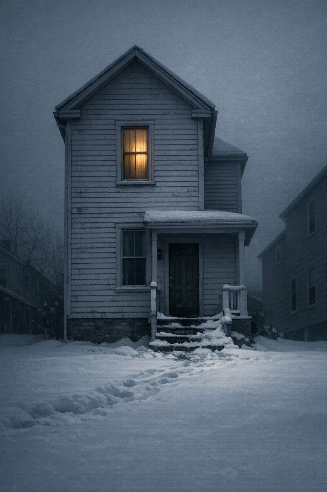

The Long Tenant
The Long Tenant
Verrill Street
The house was narrower than the listing photograph had made it look. Ellen sat with the engine off and the car pressed against the curb — Verrill Street had been resurfaced at some point in the last thirty years but the curbs dated from before that, their alignment no longer plumb with anything — and took in the fact of the house from across the street. Listing photographs were shot from angles, and this one had been no different, its subject widened and softened against a flattering April sky. What stood on Verrill Street was more accurately a slot: two and a half stories of clapboard siding, wood-framed windows at close intervals, the whole structure crowded toward the street as if the previous century had run short of lot depth. It had been white at some point. It was now the particular gray of things that had been white before she arrived.
Spring light, thin and without opinion, moved on the south-facing windows.
She got out of the car.
The lockbox was on the porch railing, a combination type, four digits; the code had come in the email with the closing documents and she had written it in the margin. She had it open in two tries. The house key was inside: brass, cut for a Schlage, older-model cylinder. She mounted the porch — the boards at the south end gave a little under her weight, she noted this without stopping — and put the key in the lock.
It turned on the first try.
The front hallway was narrow. A coat rack on the right wall had come with the house — four brass hooks, all of them empty — and someone had painted the baseboard at some point and repainted it since, several times without stripping, so the baseboard was now thick with it, its corner detail submerged. The floor was wood throughout, the grain running parallel to the hall’s length, the boards a little narrower here than in the room ahead. The house smelled of old wood and something she could not immediately put a name to — not the cold of vacancy, which she knew from other empty houses she had worked in or briefly lived in, but the older cold of rooms that had absorbed cold into themselves over time and held it. She stood with it for a moment and noted it the way she would note an inaudible passage in a transcript: marked, bracketed, the proceeding continuing. She took the legal pad from her bag.
The front room was to her left.
She stepped in. The floor gave once under the first step and steadied: not alarming, the flex of boards that had borne weight for a hundred years, the whole subfloor moving together. The room’s main fact was the desk. A roll-top, hardwood, built heavy, the top raised to expose nine original pigeonholes, all of them empty. Three drawers along the front below the writing surface; above them, two smaller drawers flanking the kneehole. The desk had come with the house — the listing had noted it included, she had offered nothing to displace it, and here it was, occupying the room the way furniture occupies a room it has been in long enough to claim its portion of the floor.
She walked around it. She opened the upper right drawer and felt along the inside edge of the wood until she found what she was looking for: the maker’s mark, burned in, the impression worn smooth by decades of handling but still fully legible. She bent and read it in the dim drawer-interior. RENICK FURNITURE WORKS. Below it, in smaller characters that had faded close to illegibility: Made in Renick, W.Va.
She straightened and noted: desk / maker’s mark, inner drawer edge: Renick Furniture Works / stays. She brought the folding chair from the hallway where she had leaned it and set it behind the desk, sat in it, and tested the height against the writing surface. The surface was high — a standing-height roll-top, not designed for use with a chair — which meant she would need a cushion or a different chair before she used it for work. This was not a problem for today. She looked out through the front windows at the street. Good light in the mornings, she thought. Manageable in the afternoon.
The baseboard radiator below the front windows was a single-pipe steam type, old but functional; she pressed the back of her hand against it and felt warmth. She would need to bleed it in the fall, and probably the others. She noted: radiators / bleed in fall.
Behind the front room a narrow hall led to the kitchen. She went through. The kitchen had been updated sometime in the 1990s or early 2000s — the appliances had that look, a mismatched generation, the refrigerator newer than the stove — but the renovation had not replaced the floor, which was linoleum worn through in front of the stove and at the sink, the backing showing. She tested the stove burners one at a time. Three ignited. The rear left did not. She noted: stove / rear left burner. The oven lit after a moment’s hesitation. She noted the sink: she turned on the hot tap and waited while the pipes ran cold, then lukewarm, then finally ran hot. Two minutes fifty seconds. She noted: kitchen hot water / slow — plumber.
Beyond the kitchen door, a back porch had been glassed in at some point and was now a mudroom, its windows filmed with winter grime, a wet-weather mat near the outer door, one wall of open shelving with nothing on it. She opened the exterior door briefly. The back yard was small — enclosed by a board fence gone gray, one section leaning outward at the base — and the yard sloped slightly away from the house. There was nothing in it. She came back inside.
The staircase was steep, the treads narrow, the risers high, the angle closer to a ladder than to a modern stair. She went up. On the third step, the tread flexed under her foot: a soft, definite give, the fastening loosened with use. She noted: third stair from bottom / tread loose / replace fasteners or new tread.
At the top: the landing.
The cold arrived immediately. Not the cold of the season — it was April outside, sixty degrees, the furnace running, she had confirmed the utilities were active before she left — but the cold of a particular place, air that had been standing in this elevation for some time without refreshing and had gone its own way. She turned slowly on the landing and attended to it. There was no direction she could identify for its source. It was the air itself, standing cold.
She noted it.
The front room — above the front room below — had two windows to the street, in the same proportion as the windows downstairs, giving the same view: the parked cars, the sidewalk, the house opposite with its curtains drawn. A closet with a bare rod and four wire hangers. A radiator under the windows, warm to the touch. The floor was the same wide-plank wood as downstairs with the same characteristic flex underfoot. The window glazing needed repointing where the compound had dried and contracted, eventually. The ceiling was sound, no stain. There was no particular cold in this room; whatever she had registered on the landing was not coming from here.
The back-room door was ajar. She had not opened it.
She crossed the landing and pushed it inward.
The room was small — she paced the width with her natural stride and counted: approximately ten by twelve feet. A single window facing the back yard, a flat-paneled closet door with no visible hardware. No radiator; she checked the walls and the floor and found no register either. The window was sealed in its frame, the sash swollen with age and immobility into the surrounding wood. She moved to the center of the room and stood there.
The cold was specific. Not drafty — there was no draft; the window didn’t move and the walls were solid plaster. Not damp — the ceiling was dry, no stain. Not the stale, flat cold of vacancy. It was the cold of a room that had been cold for a long time and had organized itself around that fact, the way rooms organize themselves around their particular silences. She put her hand against the exterior wall: cold to the touch, but no colder than you would expect from an exterior surface in April. She opened the closet and looked: unfinished inside, bare-plank floor, plaster walls, intact. Nothing in the room accounted for what the room was.
She stood there another moment.
Then she went back out and closed the door firmly, pulling it until she heard the latch engage.
Downstairs, at the desk, she worked through the list. The third stair. The kitchen hot water. The radiators. The rear left burner on the stove. She went through the bathroom: the caulking at the tub corners was lifting at both ends and would need to be replaced before water got behind the surround; the window was painted shut; the tile grout above the tub had gone gray with age but was intact. She noted the exterior porch boards at the south end: soft, worth checking in spring when the wood had dried. She noted: back-room door / latch / may need adjustment — catch alignment. She noted the linoleum and the back porch windows and the glazing.
She had been in the house for three hours before she decided to go find dinner.
Meade Street had a diner — she had located it on the map app the night before, listed as open for breakfast and dinner, rated three-point-one stars. She drove the three blocks from Verrill Street, which was unnecessary on foot but she was not yet ready to negotiate the town on foot in the early evening. She had brought less from storage than she had estimated: the machine case, the transcript computer, two bags of clothes, a box of books she probably hadn’t needed to bring, a box of kitchen equipment she definitely had. The rest was still in the storage unit in Martinsburg. She was not thinking about Martinsburg.
The counter was occupied at the far end — three people, older, not speaking to each other, all of them watching the television above the coffee machine — and empty at the near end. She sat at the near end. A waitress brought coffee without being asked and recited the daily special: pork chop and mashed potatoes. Ellen said she’d take it. She sat with the mug and looked out through the plate glass at Meade Street: a hardware store with its sign still lit, a pharmacy, a former storefront with an OPEN sign still displaying outward from a dark interior. At the corner, a gas station with its lights off. Above the rooflines of the smaller buildings on the far block, the top floors of the plant building were visible — brick, the company name long since weathered off the facade, its ghost still there in the slightly different weathering of the brick where the letters had been attached and protected the surface behind them for decades.
She ate the pork chop. She drank the second cup of coffee. Across the counter, two of the three people at the far end had a brief exchange about something on the television — a weather event, a score — and then went back to watching. No one was interested in her in particular, which was the right arrangement for a first night in a town where she didn’t know anyone and nobody had a reason to know her yet. She left a correct tip and drove back to Verrill Street.
The house was dark except for the porch light and the light she had left on in the front room. She came in through the front door and stood in the hallway. The house was at work around her: a pipe somewhere in the walls contracting in the cooler evening air, the furnace ticking off, the floorboards upstairs making one small adjustment and then going still. She stood and let the inventory complete itself. The cold she had noted on the upper landing was not present down here. She noted this too.
She went upstairs.
The back-room door was ajar.
She stood on the landing and looked at it. The gap was perhaps three inches — the door resting at its natural angle, the angle a door finds when the latch has not fully engaged and its own weight brings it back from plumb. She could see nothing through the gap; the room was dark, its window showing only the last gray of the back yard in the evening. The cold was there on the landing.
She crossed to the door and examined the latch. The catch was a standard half-inch compression bolt, its housing worn, the spring behind it intact. She pressed the door slowly until she heard the catch engage — a definite, mechanical click — and then placed her palm flat against the door and pressed. The door did not move. She tested the pressure a second time. The door held. She stepped back.
She went downstairs.
She did not go back up to check it.
At the desk, she added two items to the list she had not noted before: the bathroom window, painted shut; the exterior caulking on the back porch windows, gapped at the lower right corner and admitting air. She added back-room door / latch / monitor as a separate entry from her earlier note about catch alignment. She read through the complete list once and confirmed nothing was doubled.
She had one deposition on the calendar: an arbitration in Elkins, Thursday, an hour’s drive. After that, nothing confirmed until the end of the month. In Martinsburg, she had spent the last two years taking whatever the agency sent and waiting for the calls to come back up. They had not come back up, not to what they had been. She was not going to think about the end of the month. She had the list.
She turned off the front-room lamp and stood for a moment at the window with the sash cracked an inch. She could hear the Sandy River three blocks south — moving water, the spring level high, a faint rushing sound between the rooflines. Meade Street’s lights were visible to the south, the plant building’s upper floors dark against a dark sky. She stood there and listened to the river and then went upstairs.
The third stair from the bottom flexed toward the center when you stepped there. If you placed your weight on the outer edge of the tread, as far to the left as the tread allowed, it did not flex at all.
She learned this on the way up, and she filed it: step left.
The Stove
I put my hand on the damper handle.
The iron is cold — not house-cold, not the chill a room holds in winter. The cold of metal that has stopped holding heat. I pull the handle. The damper opens.
I open the firebox door and hold the lamp close.
The ash is settled. Not banked — settled. Gray-white powder flat at the bottom of the box, undisturbed. No glow anywhere. I hold the lamp until I am sure.
I close the firebox door.
I put my palm flat on the top of the stove. The cast iron is cold. The Riverside has been in this kitchen since 1961. My father brought it from Ronceverte in his truck. Him and two men from the mill set it in where the old one had been. I was fifteen and I watched from the doorway. Twenty-two years in this kitchen. I know the feel of it in use — the top panels warm unevenly, the left side always running hotter than the right. Tonight both sides are the same. Both are cold.
The stove is out.
The chimney is the reason.
The chimney runs up the outside of the north wall. My father explained this to me the winter I was eleven. The bad winter. The mill went to three days a week that January. We kept this house on cord wood and care through January and February and into March. He stood in this kitchen with his hands in the pockets of his work trousers. He said: the exterior-wall chimney is the weaker design.
He was not criticizing the house. He knew this house the way a millwright knows a machine. Every part, what it does and what it fails and under what conditions. He had bought it before I was born. He was teaching me to think ahead of what can go wrong.
He showed me the damper handle. He put my hand on it while the stove was going well. He said: feel that? That is the fire breathing. I was eleven. I felt it — a warmth moving through the iron, the pull of the draft going up through the column.
What a chimney does is move air. The air inside the flue is warmer than the air outside. Warm air rises. The rising pulls more air up from below, through the firebox and up the column and out the top. That pull is draft. Without draft the fire cannot breathe.
When the outdoor temperature drops far enough and holds, the flue air cannot stay warm enough to reach the top. It chills on the way up. The column goes cold from the outside wall in. When the column is cold, draft reverses. Cold air comes back down into the firebox.
You can sometimes feel it when you open the firebox door. A breath of cold from above.
I felt it around eight o’clock. That is when I knew.
Once the flue is cold you must warm the chimney before you can relight the stove. You burn newspaper — small pieces, in the firebox — to build heat in the column first. I tried this tonight. I used what was in the kindling box. The flue warmed some. Not enough. The fire went out.
That winter I was eleven, my father wanted to buy another cord of wood from a man in Lewisburg. I said we had enough. We did not have enough. By the end of February we were burning pine scraps from the woodpile my grandfather left. Pine smokes badly. It gives less heat than oak. My father said nothing about being right. He did not need to.
My father said: once you lose it in real cold, you may not get it back that night. He said it the way he said anything about machinery. Without distress. The chimney is doing what chimneys do. The logic is not personal.
I have not gotten it back.
The stove is cold.
I go through what I have. The way he taught me to go through the mill at the end of a shift — what holds, what does not.
Cord wood basket beside the stove: one piece remaining. The basket holds six when full. I filled it four days ago from the woodpile in the back yard. Oak from the ridge, bought last fall from a man in Frankford. He split it himself. The last piece in the basket is heavy. I pick it up and set it back. I am not burning it in a dead chimney tonight.
Kindling box beside the basket: empty. I used the last of it tonight trying to bring the flue back.
Matches on the shelf above the stove: I take the box down and count them. Twelve. I put the box back.
The oil tin is on the shelf below the matches. I lift it. Heavier than I expected — I have been careful with it all week. I shake it. It sloshes. Several hours of oil still in it. More than the night needs.
I set it back on the shelf.
The wool blanket is on the kitchen chair. I brought it down before dark when I saw how the night was going. I leave it there for now.
The back-porch door is in the corner of the kitchen. I latched it before dark. The porch will be as cold as outside by now. I have not opened that door since yesterday morning.
This is what I have: the lamp. The oil. One piece of cord wood I am holding back. Twelve matches. The blanket on the chair.
The thermometer hangs on the wall beside the north window. I carry the lamp to it.
The north window is the coldest window in the house. The frost has come in on the inside of the glass. I can see it at the edges — the gray-white of frost on the inside of the pane.
Fifty-one degrees Fahrenheit.
I tilt the lamp. The mercury is below the fifty-two line. Fifty-one.
Fifty-one is cold for a house. It is not cold by outside measure. Outside by now is below twenty degrees. The blizzard came down from the north yesterday and has been on the ground since. The temperature has been falling since midday. The roads out of Renick are closed. The north road up the valley is closed. I checked this morning. I tried the telephone this afternoon and the line was down.
This house holds heat in ordinary winter. The walls are frame walls. My father put insulation in the cavity himself — blown cellulose, rented the equipment from Lewisburg. The plaster is thick and in good condition. The floors are wide-plank oak and do not draft. In ordinary winter, with the stove running, this house keeps itself.
This is not ordinary winter.
The power went out at six. The stove went cold at eight. The walls have been giving up their stored heat since then. By midnight this room will be in the low forties. By three in the morning it will be lower.
The winter of 1979 the furnace went out in January and I kept the house on wood heat alone for three weeks while the part came in from Charleston. That was cold but the stove ran. Now the stove is out too.
The body loses heat faster than it makes heat when it is not moving. You keep the blanket close. You stay in the warmest room. The kitchen is the warmest room.
I know the thermometer. I know the chimney. I know the count.
The kitchen clock on the counter has stopped. It runs on electricity and the electricity has been out since six. The hands stand at six oh three. The only running clock is the travel clock on the mantle in the front room.
I carry the lamp back to the table.
The account book is on the table where I left it this morning.
I have kept it since the house came to me. My father kept the same kind before that. I do not know how many books before this one. He kept them in the front room drawer and I have his last three still. The same columns. Date, description, figure if applicable. Not more than the entry requires. The column is not for explaining. It is for saying what the thing is.
The pen is a Sheaffer with a steel nib. My father gave it to me when I started keeping the book. The ink is black. The nib has worn to my hand now and writes the way I hold it.
I open the book to the current page. I wrote here this morning: oil delivery did not come, third time this month, telephone number to try Monday. The ink is dry. The hand is mine.
I sit down and pick up the pen.
At the top of the next section I write the date: Friday 11 February 1983.
Then:
Power out since six.
The pen moves in the column.
Stove losing draft after eight, cannot bring it back.
I stop. The wind comes against the north wall and holds. I sit with the pen in my hand and listen to it hold.
I look through the kitchen doorway. The travel clock is on the mantle in the front room. I can see the face from here, in the reach of the lamplight. The hands read 8:42. The clock is wound — I wound it yesterday morning. It will run through the night.
I write: 8:42 pm.
Then: Temperature fifty-one degrees.
Then: Lamp oil sufficient. One piece cord wood, hold. No kindling.
I put the pen down. I read back through the entry.
I pick the pen back up.
I write the last line of the entry.
Nobody came to that door.
I set the pen on the table.
Outside the north wall the wind holds.
I close the account book. The cover is worn at the corners. My father’s last three books are in the front room drawer and their covers are worn the same way.
The lamp burns steady. I trimmed the wick before dark the way my father showed me. Too long and it smokes and wastes oil. Too short and it gutters. Trimmed right it burns for hours and burns clean. I trimmed it right.
The light reaches the stove and the back wall and the shelf. It does not reach the north corner or the back stairs or the room past the kitchen doorway. The front room is dark. The upstairs is dark.
I take the wool blanket from the chair and put it around my shoulders. The cold comes off the south window above the sink — even from the table I can feel it, the cold that comes off glass in sustained cold. The room is colder at the window than at the table. I sit at the table.
The blanket is cold from sitting in the room air. In a few minutes the weight of it will hold back what warmth I have. That is what wool does.
The cord wood is in the basket. The matches are on the shelf. The entry is in the column.
The clock on the mantle reads 8:44.
The Third Step
Ellen measured the front room from the south wall — north to south first, then east to west. Fourteen feet nine, sixteen feet four. She wrote both numbers in the notebook she kept at the desk and added them to the floor plan sketch she’d made on her first walk-through. The ceiling she’d estimate at nine feet until she had a proper ladder.
This was the work of the first real week: not living in the house but taking its measure, room by room. She had the inspection report, which covered structural and mechanical concerns in the language inspectors used — functional but aging, recommend monitoring — but an inspector’s attention was legal and her attention was practical. She went room to room with her notebook and wrote down what worked and what needed work, and she did not estimate or round. The left baseboard heater in the front room was drawing power without producing heat. The rear left burner on the kitchen stove remained non-functional. The upstairs bathroom window had been painted shut by someone who had intended to open it later and had not. The south porch boards she already knew about.
She worked from a list and updated the list as she went. She had been doing this for twenty years in deposition rooms from Elkins to Fairmont: taking the measure of a space before the proceeding, knowing which chair wobbled and which outlet ran the court reporter’s equipment, which aisle to leave clear for the exhibits.
The staircase had the third step. This she knew: the tread loose at center, the flex downward when her foot landed on the wrong edge, the corrective shift to the far left that she’d made close to automatic. She knew it. It still caught her — not every time, but often enough that she had stopped thinking of it as a mistake she was making and had started thinking of it as something the step did, independent of her knowing. She wrote it in the notebook anyway: third tread from bottom / loose at center / step left / carpenter when budget allows. She did not defer the note.
She tested the heat registers on the upper floor, going door to door. The landing register was fine. The bathroom’s was fine, though the valve would need packing eventually. The front bedroom’s radiator had a cracked section and a stiff valve. She wrote both down. The back room had no radiator, no register — she confirmed this now with the kind of attention she hadn’t given it on her first walk-through, when the anomalous cold had taken her attention off the question of cause. The back room was closed. She had left it closed four days ago when she’d moved in properly. It was still closed.
She went in at mid-morning, when the light was useful.
The single window faced the back yard and the spring light came through it flat and sufficient, showing the room without softening it: plaster walls in sound condition, a faded brown stripe at shoulder height that had gone to the color of old tea, the ceiling intact. She worked her way around the perimeter, running a hand along the plaster, looking for cracks or soft places. Nothing gave. She attended to surfaces. It was what she did.
The closet was flat-panel, the door painted so many times the recessed area had partially filled in. Inside: three nails in the back wall at irregular heights, driven at different times for different purposes, no reference to each other. A shelf along the top, six inches deep, bare.
She turned to the window. The sash moved without binding in its groove, the rope-and-pulley weights intact. The glazing was old — original to the house, or nearly — and someone had repointed the seal where the glass met the frame; the compound was gray and set but continuous, without gaps. She put her palm flat to the glass. Cold came through from outside, as it should. She moved her hand to the frame. No cold from beside it, no lateral seep from an unsealed edge.
The room was cold. Not measurably colder than the hall — the house was warming into late morning and she had no thermometer up here — but cold in the way that certain rooms acquire a quality over time that is independent of the current temperature, the way a conference room that has been used for difficult testimony sits differently from the one next to it even when both rooms are empty and the heat is the same. She did not know what to infer. She held the fact of it — the room, the cold that was not the season’s cold, the absence of any mechanical explanation she could produce — and wrote nothing in the notebook.
She tried the latch last. The bolt engaged the plate cleanly. She pushed from inside; it held. She pushed from outside; it held. She opened and closed the door three more times, testing the mechanism, and each time it worked as it should. By every test she could perform, the door would stay closed.
She left it closed and went back into the hall.
The desk’s inner drawer she opened and tilted toward the window light. RENICK FURNITURE WORKS / Made in Renick, W.Va. Burned directly into the wood, not a label.
She looked the company up on her phone.
Two paragraphs. Incorporated 1908. Hardwood household furniture — desks, chairs, case goods — for regional and mail-order markets. Employment peaked at approximately two hundred workers in the 1940s and 1950s. Production contracting through the late seventies. Plant closure 1991. There were two photographs: the building’s exterior, the company name still legible on the south face in whatever decade the photograph was taken, and a furniture catalog page showing a bedroom suite.
She studied the catalog photograph. The suite was plain and proportioned correctly, made to last because the people buying it could not easily replace it. This desk had outlasted the company that made it by thirty-some years. The two paragraphs were the whole remaining public record, and the record was brief — first and last entries, the column without the middle.
She put her phone away.
She drove to the hardware store on Meade Street at eleven. The strip was three blocks: hardware, barbershop, the former bank building with a realtor in the street-level section, a lunch counter, the resale shop. The building fronts were in various conditions of occupancy, the kind of block that had been many things and was now fewer things but was still standing. At the north end, past the working storefronts, the plant building rose four stories above the neighboring rooflines. She’d seen it from the diner window the first night and from the car on the drive in, but she stopped now and looked at it directly. The letters of the company name were gone from the south face — the rendering had come off in sections and taken the paint with it — but the ghost remained in the differential weathering of the brick: darker where the old rendering had protected the surface, lighter where decades of weather had worked the exposed stone. RENICK FURNITURE WORKS, still legible to anyone who knew to read the record the brick had kept of what had been there.
At the hardware store she bought plumbing fittings, glazing compound, a box of screws, radiator paint. The man behind the counter was in his seventies, unhurried in the way of a person who had been in one building long enough to stop measuring time by urgency. He rang her items as she brought them to the counter.
She said: I bought the house on Verrill Street.
He looked up from the register.
He said: that house has been sitting empty for a while.
She said yes.
He looked at her for a moment — not unfriendly, just attentive — and then finished ringing her out and told her the total. She paid cash. He put her things in a paper bag and set it on the counter. She thanked him and picked it up and went out.
There had been a moment, just after he’d looked up and before he’d gone back to the register, when something more particular might have been offered or invited. She marked it and let it close without pressing it.
She left the car on Meade Street and walked.
The barbershop was open, a man in the chair reading something. The lunch counter had three customers at the window table. The former bank’s front window held a real estate placard and, in the rear, someone’s dark office. She walked to the north end, where the plant building was, and stood in front of it for a moment: the boarded ground-floor windows, the upper floors still with their original glazing bars, a corrugated-metal door with a handwritten sign that said the building was in use for storage. The brick was river-aggregate, local stone worked into the clay, visible at the corners and along the mortar lines. A building that expected to still be here.
She walked back.
The resale shop had a plate-glass front. In the window: a dresser with a mirror attached, a gate-leg table, a side chair with a white tag tied to the front leg. She went in.
The smell was furniture oil and old paper. The pieces were along the walls and arranged loosely in the center in a rough room shape — a settee, a long dining table with four mismatched chairs around it, a pie safe with punched-tin doors. Several wall pieces had white tags. She read two of them: Renick Furniture Works, Est. 1908. Made in Renick, W.Va. She picked up a straight-backed ladder-rung chair near the south wall, heavy for its size, and turned it over.
Renick Furniture Works, Est. 1908. Made in Renick, W.Va.
She paid twelve dollars. She carried it out to the car.
At the south end of Meade Street, two blocks down between the buildings, the Sandy River was visible — brown with the last of the snowmelt, running fast between its banks.
She set the purchased chair across from the desk in the front room and stood in the doorway and looked at the two pieces together.
She knew who had made them. She knew the company’s founding and its closing and its peak employment figure. Who had lived with this furniture in this house, what they had done with it and what had happened to them: that was a different record. It existed, or it had existed, or some of it was still accessible. Property records were public. Deed indexes, grantor-grantee books, the clerk’s office. She had worked enough property depositions to know the shape of the search, the offices you went to, the indexes you asked for. She had not run one herself, but the procedure was findable, and findable was sufficient.
She sat down at the desk. The transcript computer sat closed at the edge. She had nothing on the calendar until Thursday, nothing confirmed after that until the end of the month.
She had time. She had the procedure. The county courthouse was four blocks away, and it was open on weekdays until four.
At seven she locked the front door and started upstairs. The third step caught her — the give at center, the shift left to the solid edge, the small recalibration the step required each time whether she expected it or not. She did it without stopping.
The landing was cool. She passed the back room. The door was closed.
At the end of the hall she paused. The cold that had no season to it was there — not the outdoor night, not the furnace cycling, something the house held in certain places that she could not account for mechanically and had not tried to name.
Tomorrow she would go to the county records room and ask for the deed index on the Verrill Street property. She would find out who had owned this house before her, and for how long, and what had become of them.
She went to bed.
The Latch
The front-door latch is a thumb-bar on the inside, cold steel when I put my hand to it. Cold in a cold house — everything is cold now, but the metal is colder than the wood around it.
I press the bar down. The bolt draws back. I press it up. The bolt goes home and the plate catches it cleanly.
I try it again. And again. Three times is what my father would do — not because he distrusted a latch he had tested once, but because you do not trust a thing you have tested once; you trust a thing you have tested in the dark and the cold and found sound. He said it about flanges. He meant it about everything.
The door is locked. I have locked it myself and I have not opened it since before dark. Nobody has come through it tonight.
I hold the lamp up toward the transom glass. The storm is past the glass, present and steady — the wind in the eaves has not changed since full dark, which means it is not getting worse and it is not letting up. What I can see of the street through the upper glass is white and undisturbed. No tracks near this door. The porch boards are snow-covered and smooth and nothing has been near them tonight.
I come back through the hall to the kitchen. The wall thermometer reads forty-four degrees.
Seven degrees since half past eight. I have done this calculation already, at the table: the house will be in the mid-thirties before morning, lower if the wind picks up. Mid-thirties is survivable if you have what you need. I have the lamp oil. I have the blanket. I have the one piece of split oak, held back.
This door holds. I have confirmed it.
I take the lamp into the front room first.
My father’s desk is at the east wall — his since 1964, when the furniture works changed a line and offered the floor models to workers at a discount. He brought it home in a borrowed truck with two men from the plant helping him carry it up the porch steps. I was seventeen. The desk has been in this room since then and it will be in this room after everything else I know about this house is gone.
The lamp makes the desk’s shadow long on the wall. I know this shape — the roll of the top, the blocky weight of the drawers — the same shape it has thrown there every winter of my life. I do not sit at it tonight. The chair is pushed in.
The travel clock on the mantle is ticking. It is the loudest thing in the house right now, which is how I know the house is quiet. I wound it yesterday morning. It is accurate; I keep it accurate. When the power went out and the kitchen clock stopped at six, the travel clock became the only one I trust. I glance at the face: nine-ten. The lamp oil is sufficient. The blanket is on the kitchen chair. I have been in the house long enough to know what I have for the night.
The front-room window: I check the latch. Firm. The curtains hang straight. Nothing at the edges.
Into the kitchen.
The stove is at the north wall. I have not gone near it since half past eight — an hour and a half ago, when I gave up on the flue and set the damper handle where it is now and came away. When the stove is doing what it’s supposed to do, it makes sound: the tick of metal expanding, a low pull in the chimney throat that is something between a sound and a presence. My father called it the house breathing. Tonight the kitchen is quiet. The breathing has stopped. I do not put my hand to the iron to confirm what I already know.
The window above the sink: the latch is a simple turnbuckle. I turn it as far as it will go and check that the tab seats in the keeper plate. It does. The frost on the inside of the glass is thicker than at half past eight — the feather pattern spreading in from the corners, which is how it always spreads in this window when the temperature drops far enough. I have watched it do this many winters.
The second window, by the north wall: latched. I feel along the lower frame. No cold coming through the frame itself.
I open the pantry and hold the lamp inside the door.
Four tins of evaporated milk. The rolled oats. The peanut butter with some left in the jar. The pound of rice, the dried beans, the loaf of bread I bought at the Kroger in Lewisburg before the storm. Crackers. Coffee.
I will not starve. This is not the danger. I close the pantry.
The back-porch door: I latched it before dark and it is still latched; the weather strip presses against the frame. The porch is as cold as the outside and there is nothing I need from out there.
The ground floor holds.
The staircase.
The third step is the third step. My father measured it once, made a note of the board width in his pocket notebook, and then did not fix it — not from forgetting, but because by the time the materials were available and the day was right, the step had stopped being a problem and become part of the house. You learn it. You step to the outside edge. I step to the outside edge now and I am past it and I go up, and my foot knows the route without my thinking about it. Thirty-some years of the same step.
The landing is colder than the ground floor. Heat goes low when there is heat to move; when the stove is out, the upper floor is simply the temperature of a room that has not been heated in February. I hold the lamp up. Four doors. The rag rug at the top of the stairs, which I have been stepping around since I was seven years old.
The front bedroom first. Two windows, both latched, the curtains straight. Cold and still. I pull the door shut behind me.
The bathroom. The window latch is stiff from the cold; I press it firmly until it seats in the plate.
My room. The upper right corner of the window frame has never fit right in its track — the sash sits a fraction out of plumb and there is a small gap where it meets the frame on that side. I have never fixed it. I push the frame up firmly. The draft through the gap is faint and lateral, not significant, not the main problem tonight. I press once more and come away. This gap has been there since before I can remember, and I have not fixed it any more than my father fixed the step.
The upper floor holds, for what it’s worth.
At the end of the hall is the back-room door.
I carry the lamp to the end of the hall and stop. My shadow falls forward toward the door. I lift the lamp a little. The door is flat panel, painted many times over — the paint thick at the hinges where it has built up in layers over the decades, the center panels slightly raised from all the coats.
I put my hand on the handle.
The cold that comes from under this door is not the storm’s cold. The storm’s cold has direction: it runs from somewhere to somewhere, it moves through a gap or around a frame, and if you hold still you can feel which way it is going. The cold from under this door does not run. It sits at the base of the door and stays. I have known this cold for years — longer than I can account for, or anyway longer than I have been accounting for things carefully. I spent time on this room once, in the years right after my father died. I went through every surface: the window seal where the glazing compound had dried and cracked, the chimney breast where the old stack ran before he had it capped, the floor at the baseboard. I found nothing I could put my finger on. Eventually I stopped looking.
My hand is on the handle.
The ledger is in this room. On the shelf above the window, where it has lived since I started keeping it after my father’s last book was full. His last three books are in the front-room drawer; my books have been here, on this shelf, in this room. That is the arrangement.
Except the ledger is not here tonight. I carried it to the kitchen table this afternoon, before the power went out, when the barometric pressure changed in a way I recognized and something in me said bring the book to where you will be. The shelf in this room is empty.
There is nothing I need from behind this door tonight.
I am not afraid of this room. I am simply not going in tonight. The back room is not tonight.
I take my hand from the handle.
I turn back down the hall.
The staircase again: the third step, outside edge, no flex. Back into the ground floor, into the kitchen. I set the lamp on the table and sit in the chair and pull the blanket around my shoulders. Wool, and not warm — not truly warm, not at forty-four degrees in a house still going lower — but I know the weight of it.
The stove at the north wall says nothing.
The account book is on the table, open to tonight’s entry. The column: the time, the power out since six, the stove losing draft, the inventory I took at half past eight. What holds and what does not. At the bottom of the column is the line I wrote when I first sat down tonight.
I read it over.
Nobody came to that door.
Outside, the wind in the eaves is steady. The same pressure it has been for three hours, not changing.
From the front room, the travel clock ticks.
The lamp is burning.
The front door is latched.
Chain of Title
The drive to Lewisburg was twenty minutes south on 219, the road running down through the Greenbrier Valley with the hills going green on their lower slopes and bare and pale above the treeline where spring had not reached. The river showed below the road on the right at intervals between the farms — brown still, the last of the high water settling toward the May level. She had made this drive twice already since moving in, both times on deposition work at the courthouse annex, and she knew the parking lot on the north side of the building and the entrance off the side street. She took the public main entrance this time. She was not here on contract.
She had her notebook on the passenger seat. One line at the top of the first clean page, written before she left the house: deed index, 412 Verrill Street, chain of title. The rest of the page was empty. She would fill it in order, the way she filled a transcript — left margin to right, the sequence of the record as it ran, nothing inserted ahead of its place in the column.
The courthouse was three stories of cut stone on the main square, the federal flag on its corner pole going limp in the still May air. She had been inside twice and knew the layout of the first floor.
The records room was long and fluorescent-lit, a counter running most of the length of the north wall with two workstations behind it and a rack of binders on shelving above the lower cabinets. The kind of room she had been in hundreds of times across twenty years — the smell of it was the same institutional room, neutral conditioned air over old paper, no windows. The clerk at the counter was in her mid-forties and had the unhurried authority of a person who had been in this particular building long enough to stop thinking of it as a building and start thinking of it as a kind of extension of her own professional attention. She moved without wasted motion.
Ellen said: I’d like to pull the deed record for a property. 412 Verrill Street, Renick.
The clerk turned to the terminal. The deed index was digitized — the county had finished the scan-and-index project three years back, she said, without being asked, the way a person explains a procedure they explain often. Grantor-grantee records back to 1920, searchable by address. She typed the address and put the results on the screen and angled the monitor so Ellen could read it.
The chain of title ran top to bottom, most recent transaction first, the way a transcript runs from the last answer back to the first question. Ellen read from the top and worked down, noting each transfer in the shorthand she used for field notes.
Her own deed was at the top: the sale closed in March, grantor a residential holding company from Roanoke, Ellen the grantee. She had her copy of this instrument already. She wrote nothing.
Before her purchase: the holding company had acquired the property from the county of Greenbrier in 1993, by administrative conveyance following the close of a probate proceeding. The deed notation read estate, intestate, with a case number she wrote down.
Before the holding company: a deed dated 1978, recorded September 14, grantor Harold Markey, grantee Della Markey, instrument type quit-claim. A family transfer — same surname, the form used when property passed between relatives. She wrote both names.
Before that: Harold Markey as grantee, the deed dated 1951, acquiring from a prior owner.
She said: can you pull Harold Markey’s probate file? He’s the grantor on the 1978 quit-claim.
The probate index was not digitized. The clerk brought a binder from the back room — the 1970s index, alphabetical by surname — and set it on the counter without ceremony. Ellen found Harold Markey in the M section: estate case, filed December 1978.
The file itself was thin. Harold Markey had died in the fall of 1978 — the death certificate in the file gave October as the month — and his estate had been administered without contest. A single-page will, properly witnessed and recorded. The estate consisted of the house on Verrill Street, a checking account, and the household contents. The sole heir named in the will was his daughter, Della Markey.
The household inventory listed the contents collectively: roll-top desk (hardwood), dining table and four chairs, bedroom furnishings, kitchen appliances and equipment, miscellaneous. An appraiser had assigned the lot a nominal value.
One other name appeared in the file. In the section on potential heirs, below Della Markey’s name: Cale Markey, son. Address unknown. Not served. The estate had closed without him; he had not appeared in the proceeding and had not contested the outcome.
Ellen wrote: Cale Markey, son. Address unknown. Not served.
She turned the page in her notebook. She said: is there an estate file for Della Markey? She would have died in 1983.
The second binder. The clerk found the case number and went to the shelves in the back room.
This file was considerably heavier than Harold Markey’s.
Della Markey had died intestate — no will had been filed or found. The proceeding had been complicated by the absence of a will and further complicated by the failure to locate next of kin, and the resulting administration had run eight years before it closed. Ellen worked through the documents in the sequence they had been filed.
The death certificate was at the front. She read it the way she read any document: from the top, in order. Name: Della Ruth Markey. Date of birth: 1946. Date of death: February 12, 1983. Place of death: 412 Verrill Street, Renick, West Virginia. Certifying official: the Greenbrier County coroner. The cause-of-death section was typewritten, the form predating the electronic templates:
Immediate cause: Hypothermia.
Manner of death: Accidental.
She wrote both lines verbatim.
Behind the death certificate, the estate’s eight years spread out in administrative sequence. Cale Markey appeared throughout — on petitions for notice, on certified mail logs, on return envelopes with no forwarding address stamped in red. Three addresses across four years. Each one producing the same result: no response or returned to sender or the forwarding order expired. In 1987 a search of four years had produced no contact; the court had appointed an administrator. In 1991 the proceeding had closed on administrative grounds and the property had conveyed to the county.
She noted it in the column: Estate open 1983–1991. Cale Markey: three addresses, no response. County acquired 1991. Sold to LLC 1993.
She looked at the dates in her notebook. She had been in the house for three weeks.
She said: I want to ask about the coroner’s records. There would be an inquest file from February 1983 — for Della Markey.
The clerk said: the coroner’s office is on the third floor. They’re a separate office from ours.
Ellen said: have those records been digitized yet?
The clerk shook her head. Not yet, she said. The project covers the sixties through the mid-nineties — it’s all paper up there, boxed in the back. They still have the originals. She paused: the project is supposed to be finished by end of year.
Ellen said: so I could still request the paper files.
The clerk said: yes, while they’re still in the originals. I’d go soon if I were you. Once something’s scanned, I can’t tell you what happens to the paper — that’s not my office.
She said it without inflection. She was the record.
Ellen thanked her and asked for a deed abstract. The clerk printed two pages and set them on the counter. Ellen folded them into the back of her notebook.
She went out through the main entrance into the May afternoon — the courthouse steps, the flagstone walk, the square with its flag pole and the lunch hour still moving on the street. She stood at the bottom of the steps for a moment. Warm day. The pigeons on the upper ledges of the building.
She walked to her car.
She drove north on 219 for twenty minutes with the notebook on the passenger seat, the column of notes in the shorthand she had used for twenty years. The hills were the same hills going back as going down. The river below the road was clear in the May light, running fast between its banks, the snowmelt long finished, the level dropping toward summer.
She had the chain, complete. Harold Markey, 1951. His death in October 1978. The house to Della Markey, sole heir, by quit-claim — signed over before Harold died or in the last weeks of his illness, the deed was simply dated and recorded and the file didn’t say when he’d understood he was dying. Della Markey: the house in her name from 1978 until the night in February 1983 the county had recorded as accidental, hypothermia, a woman alone in a house going cold. Eight years of unanswered letters to a brother who moved three times and never wrote back. The county acquiring the property and holding it until 1993, then the holding company, then her.
The transcript was incomplete. The death certificate said accidental and hypothermia and gave the address and the date. The inquest file was the document behind those two words. She had not read it. It was on the third floor of the courthouse she had just left, still on paper, and the digitization project would reach the 1983 box before the year was out.
She needed to go back before it did.
She turned onto Verrill Street at four-twenty. The house stood in the afternoon light: the narrow clapboard front, the two tall windows, the porch with the south board she still needed to see to. She parked at the side and let herself in through the front door.
She set the notebook and the deed copies on the kitchen table. She filled a glass at the sink and drank it standing at the window, looking out at the back yard — the grass coming in ragged around the old fence post, a pair of grackles working the corner by the gate. She let the afternoon quiet of the kitchen settle for a moment. Then she carried the deed copies into the front room.
She set them on the desk.
She sat down in the work chair and opened the inner drawer and tilted it toward the window light. RENICK FURNITURE WORKS / Made in Renick, W.Va. She had read this mark on the first day and looked the company up and gotten the two paragraphs and the photograph of the building’s exterior. She had read it again a week in, reaching for a pen. She was reading it again now, with the probate inventory from Harold Markey’s estate file present in her notes on the kitchen table — roll-top desk (hardwood), listed among household effects, appraised at nominal value, passed to sole heir Della Markey.
The same desk. The desk had been here for all of it.
She held the drawer open. The mark was as it always was.
She slid the drawer closed and put the deed copies in the center drawer. She did not reach for the transcript computer. She had nothing on the calendar tonight, and the work she had come home with was not the kind that had a column to fill.
At seven she went to the stairs. The third step caught her — the flex at center, the left-edge correction, the small recalibration her foot had made automatic in three weeks — and she was up and on the landing. The landing was cool.
At the end of the hall the back-room door was closed.
She stood for a moment. The cold was there — the cold with no season in it, no draft from a frame she could account for, no source she had found in three weeks of checking. The cold the room held without explanation and without change, the same on her first walk-through as it was now.
She went on to her room. The door closed behind her.
The Flue
The ash bed is pale gray.
Not white. White means cold all the way through. Pale gray means something is still below the surface. It has not finished going out.
I open the firebox door and lean close. The smell is cold ash and faint char — the way a fire smells an hour after it is out. I put my hand near the surface without touching it. I feel nothing through the air between my palm and the ash. Still: pale gray. The stove has been cold since eight o’clock and I tried then and it did not work, but pale gray is not nothing.
The kindling box has what kindling leaves behind. The real kindling went at eight — I burned it in the attempt, all of it, and it was not enough. What is left is what you find when you tip the box and look: bark pieces, some wood chips, a splinter the length of my hand. Not kindling in any real sense.
I lay the bark and the chips in the corner of the firebox, near the ash bed. I tear three pages from the newspaper on the pantry shelf — yesterday’s, still folded, the back section with the classifieds and the legal notices — and I crumple them and set them on top. Then I take the tin from my coat pocket and open it.
Three matches.
I strike one.
The paper catches and the bark catches after. The flame is yellow and has height. I watch: ten seconds, fifteen. At twenty seconds the flame shortens at the base. At twenty-five the smoke from the burning bark goes the wrong direction — down, back into the kitchen. At thirty the flame is out.
Cold air from the flue, pressing down.
I close the firebox door.
An exterior chimney runs up the outside of the building. My father explained this to me in 1961, the same winter he installed the stove. He had gone to Ronceverte to buy it — a Riverside range, the model he had seen in a house in Lewisburg — and he had it set on the north wall with the chimney running up the outside. He sat me down and explained the liability of that configuration.
An exterior chimney has no warmth from the house around it. A chimney that runs through the interior picks up heat from the rooms it passes through; it holds temperature. An exterior chimney in a cold winter chills overnight and warms again in the morning with the fire — in ordinary winter weather this is manageable. In sustained extreme cold, the kind where the temperature does not moderate overnight but continues dropping, the flue chills past the point where a standard fire will warm it fast enough. The cold column of air in the flue presses down against the heat trying to rise. The draft reverses. The fire smothers.
The correction is called priming the flue. You make a torch from paper — tight at the base where you will hold it, loose at the top where it will burn — and you push it up into the firebox as far as your arm goes. The torch heats the air in the lowest section of the flue. If the chimney takes, you feel the draft shift on your forearm: the cold column stops pressing down and the pull begins and the smoke goes the right direction. Then you build your fire while the draft is moving. You have two minutes before the pull goes neutral. Have your kindling ready before you light the torch.
My father used this method twice in the years we had this stove. The second time he showed me how. He said: you will know if it is taking because you will feel it on your arm, the direction of the air changing. He said: if you do not feel it in thirty seconds, pull back. Do not waste the torch on a chimney that is not going to take.
The rest of the newspaper: the front section, the local news, the weather page. I tore from the back already. I fold what is left and tear it lengthwise and roll it into a cone, tight at the base, the top open where the flame will catch fast. I hold the cone’s top edge near the lamp wick until it catches.
Then I push my arm into the firebox, shoulder against the iron surround, torch angled up toward the flue throat. This is as far in as the arm goes. Above me: the firebox narrows into the throat and from there into the flue, thirty feet of exterior masonry chilled to what this storm has made of the night outside.
I hold the torch and watch the smoke.
At first the smoke curls near the cone and drops — going down, not up. Ten seconds. Fifteen. I hold. At twenty seconds the curl changes: the smoke goes up, thins at the top of the firebox, is drawn into the throat. Then I feel it on my forearm. The air direction changing. The pull beginning. Faint, but it is there. The draft has shifted.
Twenty-five seconds. Thirty. The torch is burning toward my hand.
I pull my arm back and tip the cone onto the ash bed and take the bark pieces from the firebox corner and lay them over the cone where it is still burning. I lean in and blow, steady, moving the air the direction the draft is going. The bark catches. A small fire, but a fire.
I take the cord wood from the corner — one piece, split oak. I set it in the firebox flat-side down on the bark, angled so the air can reach under it. Then I close the door.
The tick of metal expanding. A low pull from the chimney throat: the house breathing, my father called it. I put my hands near the firebox door, not touching, and wait.
Three minutes. I count them.
The pull from the chimney throat stops.
The tick of expanding metal stops. The kitchen goes quiet in the way it went quiet at eight o’clock, when the stove had just failed and the cold had not yet settled in. Then I smell it — first the smell, then I see it at the door seam, then the smoke is in the room when I open the door to clear it.
The cord wood is in the firebox. Burning, barely — flame low and blue at the outside edges, the log too cold from the kitchen air to have caught properly in three minutes. Then not burning.
I watch it.
I close the firebox door.
I open the tin.
Two matches.
I tip the tin toward the lamp and count them again. Two. I look into the tin the way you look when you are not accepting the first count — holding it to the light, checking whether a match has slid flat against the friction strip. No. Two.
I could try again. The chimney is not going to take tonight. Without newspaper left, without bark left, I cannot make a second torch, and without a torch I cannot prime the flue, and the cord wood will not catch alone in a cold firebox. Trying again would spend two matches and the last of the cord wood on an attempt I have already made and know the result of.
I put the tin back in my coat pocket.
The cord wood is in the firebox. Unburnt. I am keeping it there.
I sit down on the kitchen floor.
Not the chair. The chair is at the table, where the ledger is, where I have been writing since half past eight. It is colder than the chair, colder than the air at shoulder height, because cold settles to the lowest point. I sit on it anyway.
I put my back to the south wall and pull the blanket around my shoulders. The linoleum is rigid under me. No give in it at this temperature. I can feel the cold of the floor through my clothes.
On my way back from the pantry I looked at the wall thermometer. Forty-two degrees. Lower than the last time I looked.
What I have:
The lamp on the table, wick trimmed this morning, oil sufficient for several more hours. The flame is steady. This lamp is mine; I know how it works; it will not go out unless I let it.
The two matches in my coat pocket.
The cord wood in the firebox — the one piece of split oak I have been holding back since eight o’clock.
The cold in this kitchen is not the storm’s cold.
The storm’s cold has direction. It comes from somewhere and goes somewhere. It has the weight of wind behind it. It finds the gaps in the casing and the seams in the frame and moves through them; you can tell which way it is going. I know the storm’s cold — I felt it when I unlatched the back porch before dark to check the door, and it pressed against my face and the back of my hands. Direction. Pressure.
It is the house’s own cold — the cold that builds in a space when the heat source fails and there is nothing to replace it. It does not come from a direction. It comes from the walls and the ceiling and the floor and the air itself, which has been giving up heat for three hours and has less left to give.
My father had a name for this kind of cold. He said that a building gone cold all the way through is a different situation from a building you have just opened the door on. One still has warmth in the material. The other does not. You can feel the difference, he said. In one you can still work; in the other you cannot warm it without a heat source and more time than you have.
The lamp burns on the table.
The travel clock ticks from the front room.
The chimney is cold.
The cord wood is in the firebox.
The cold is in the walls.
Manner of Death
The coroner’s office was on the third floor of the courthouse. She had called ahead. The clerk had the name on a yellow sticky note — she could see it from the counter, written in block capitals: MARKEY / 1983 — and went through the door behind the counter without needing to be told what she was looking for.
Ellen waited at the counter. Through the window behind the clerk’s station she could see the parking lot and, past it, a strip of the main square. A man walked a dog across the far corner. The courthouse itself was quiet in the particular way of stone buildings in midmorning, the kind of quiet that absorbed the fluorescent hum and the click of a printer in an office down the hall and made them part of the silence rather than interruptions to it.
The clerk returned carrying a manila folder, letter-sized, thick enough to require both hands. She set it on the counter. The tab was labeled MARKEY / 1983 in pencil.
“It’s the full file,” the clerk said. She was a woman in her late thirties, reading glasses on a lanyard around her neck. “Death certificate, investigation report, pathologist’s opinion, the inquest proceedings, witness statements. Everything that was opened.” She indicated a door to the right of the counter, propped open with a rubber wedge. “Reading room. You can photograph anything you need. Nothing leaves the floor.”
Ellen thanked her and took the folder.
The reading room was exactly the size it needed to be: one table, two chairs with padded seats, a fluorescent bar overhead, a window on the far wall looking out over the parking lot and the laundromat roof across the street. Nothing on the walls.
She set her bag on the floor, sat down, and placed the folder on the table in front of her, flat.
She opened it.
The death certificate was the first document, paper-clipped to the inside cover. A standard state form, the type faded to gray in places where the ribbon had been low or the paper had pressed against the neighboring page for forty years. She had seen certified copies of death certificates attached as exhibits in estate depositions and wrongful death proceedings. She had never held one like this — an original, slightly stiff at the fold line, the coroner’s signature in blue ink at the bottom: a name she could not make out clearly, three letters that went illegible above the signature line.
She read it from the top. That was the discipline: in order, the way she read any exhibit, before doing anything else with it.
Name of decedent: Della Ruth Markey. Address: 412 Verrill Street, Renick, West Virginia. Age at death: 37. Date of birth: 1946. Occupation: Office Worker. Place of death: Residence, as above. Date of death: February 12, 1983. Immediate cause of death: Hypothermia. Contributing conditions: None listed. Manner of death: ACCIDENT. Date filed: February 17, 1983.
She read it through again and photographed it.
Occupation: Office Worker. She had not found this in the deed records or the probate file; she wrote it in the small notebook she carried for depositions. An administrative designator, stripped of particulars — clerk, bookkeeper, filing, front desk. Whatever the plant had required in its office in the years it was running. She had not found a date of employment or of separation in the probate file. She made a note to check.
Thirty-seven years old. That was the figure the other documents had not given her — not the deed, not the probate index, not the probate file itself, which had reduced her to an estate and a string of unanswered notices. The death certificate made her a person of a specific age. Ellen had been thirty-seven seven years ago.
The death certificate was what she had expected: the transcript’s cover page. It had the ruling and none of the testimony.
She turned to the next document.
The coroner’s investigation report was three pages, typed on a preprinted form with handwritten additions in the margins where the form’s sections hadn’t been sufficient. The prose style was familiar — declarative, passive-voiced where it could be, specific about what the investigation had found rather than about what could be concluded from it. Not a verbatim transcript; the investigation report was the official account of what had been physically present, examined, and confirmed. She read it through once, then went back and photographed each page in order, then read it again.
The neighbor’s call had come in at seven forty-two AM on February 12, 1983, from someone on Verrill Street who had not observed signs of habitation at the address since the storm began on the ninth. Deputies arrived at eight-fifteen. They knocked at the front door; no response. They called out; no response. The front door was locked — a deadbolt, noted as engaged from the inside. Entry was gained through the kitchen window on the east side, which had a defective latch that allowed the sash to be raised from the outside without the lock engaging.
She made a note: defective kitchen window latch. She photographed this page and moved to the second.
The deputies had found the decedent on the kitchen floor, east side, near the stove. She was lying on her side, wrapped in a wool blanket, facing the firebox door. The stove was cold. The ambient temperature in the house at time of entry was recorded as approximately thirty-six degrees Fahrenheit.
Ellen read this paragraph again before photographing the page. Thirty-six degrees in the house. The stove cold. The woman lying on the floor beside it.
The investigation had found no sign of forced entry at any point of entry. No evidence of trauma. The house was described as in ordinary order with the following exceptions in the kitchen: spent matches on the stove surface and on the floor immediately adjacent; fragments of newspaper, some ash and some partially burned, in and around the firebox area and near the stove; wood chips and bark material in the firebox and on the floor near the woodbox. The woodbox against the back wall had been used down to bark scraps and splinters. The decedent’s wool coat was found on the back of the kitchen chair nearest the stove. A kerosene lamp on the kitchen table had burned dry.
She photographed this page and made three separate notes: matches / newspaper ash / bark material — firebox and floor. Then: woodbox used to scraps. Then: wool coat on chair, not on body.
She sat with that last note for a moment. The wool coat on the chair. The wool blanket around her on the floor. The coat was the warmer garment; the blanket was what she had been wrapped in when they found her. The placement suggested someone who had been working — the fire attempts with her arms in the firebox, the coat set aside to have her arms free — and who had then retreated to the floor with the blanket instead. She knew she was reading inference into the placement. The report did not say this; it said only where the coat was found. She wrote the inference in the margin of her note, labeled it inference, and continued.
The third page of the investigation report addressed the stove. The stove was identified as a Riverside wood-burning range, installed on the north wall of the kitchen, with the chimney running up the exterior north wall of the house. The firebox contained ash consistent with multiple fire attempts made over an extended period. The examination of the stove and associated stovepipe found: no mechanical defect. The chimney was exterior-wall construction; the report noted that this configuration was consistent with draft reversal during sustained periods of extreme cold.
She photographed this page and read the two sentences again.
No mechanical defect. The flue had not collapsed, the damper had not seized, the firebox had not cracked. The investigation had examined the device and found it intact. What the second sentence gave was the condition: an exterior-wall chimney in sustained extreme cold was a chimney whose draft could reverse. That was not a defect. That was the design under the conditions the storm had made.
She put the third page down and made a note. No mechanical defect / exterior-wall / consistent with draft reversal. Then she sat for a moment with the folder open and the parking lot through the window behind it and the light on the laundromat roof that was the light of a May morning.
The report recorded what had been found. It had been charged with determining whether the death had involved foul play or external cause, and it had answered that question: no and no. The question it had not been charged with — that was not in the scope of the investigation and was therefore not in the report — was why a thirty-seven-year-old woman in otherwise normal health had sat in a failing house in a February blizzard and died there when the door had been latched from the inside and no one had made her stay.
She turned to the pathologist’s report.
Two pages. A physician had examined the body on February 13, 1983, and prepared the medical opinion. The name and credentials were at the top; she made a note of both and moved to the finding. The cause of death was hypothermia, consistent with prolonged exposure to cold in an inadequately heated environment. The clinical documentation of physical presentation she moved through at a professional pace — she was not reading for the medical testimony, which was not in dispute, but for the finding on condition.
The conclusion section was at the bottom of the second page. No alcohol. No controlled substances. No underlying medical condition that would have materially accelerated the subject’s vulnerability to cold exposure. The decedent, at the time of death, had been in otherwise normal health.
She photographed the conclusion page and wrote in her notebook: no alcohol / no drugs / no underlying conditions — in otherwise normal health.
Below that, in the margin, she wrote what she had written before: no mechanical defect.
The pathologist had been asked to determine whether the physical cause was as stated and whether any internal cause had contributed. Hypothermia; environmental cause; no contributing condition. She was healthy. She was cold. She died.
The inquest proceedings were the final formal section, before the witness statements. A jury of six Greenbrier County residents had been convened on February 22, 1983 — ten days after the body had been found, five days after the death certificate had been filed. The proceedings were documented in summary: the coroner’s opening, references to testimony from the deputy on scene and from the pathologist. The jury’s deliberation was noted as brief. The verdict was on the last page.
She read it.
The jury finds: Della Ruth Markey died on or about February 11–12, 1983, as a result of hypothermia brought on by exposure to cold following the failure of her heating source during the storm of February 9–12, 1983. No evidence of foul play. No evidence of trauma. The death is found to have been accidental in nature. Verdict: Accidental Death.
She photographed the page, then read the verdict sentence a second time.
Failure of her heating source. The investigation report had found no mechanical defect. The verdict said the heating source had failed. The device itself had not been defective; the conditions had made it unable to function. The jury’s language had absorbed the distinction. Failure of her heating source was the summary, the paraphrase — accurate in its conclusion, inexact in its mechanism. It was the kind of paraphrase she had spent twenty years refusing to make.
She wrote: failure of heating source / no mechanical defect and drew a line between them in her notebook.
She did not always know what the notation would be for until later in the transcript.
The witness statements were at the back of the folder, clipped together with a binder clip rusted at the hinge. Three sheets of onionskin paper, the statements written in a careful, unhurried longhand she recognized as a county official’s — not a stenograph transcript, not a verbatim record, but a professional summary written from notes. This was how it had been done in 1983 in a county like this: a deputy or court official had sat with each witness and written out the material points in sequence. The result was not what was said but what had been understood and transcribed. If anything had been summarized incorrectly or left out, the error was in the document and would not be visible in the document.
She counted the sheets: three.
The first bore a name at the top, in the same official hand as the statement text: Mabel W. Duff, Verrill Street, Renick, WV. Below that, a date: February 20, 1983. The statement opened with the witness identifying herself and her relationship to the address in question — she lived three houses north, she had known Della Markey since the Markeys had been in the house. Ellen settled in her chair and found the first line of the substantive statement.
I last saw Miss Markey on the evening of February tenth—
“We close in fifteen minutes.”
She looked up. The clerk was in the doorway, the reading glasses lifted from her face and held in one hand. Ellen checked her watch: eleven twenty-two. She had been in the reading room for two hours.
“May I photograph the remaining pages?”
“If you can do it quickly.”
She could do it quickly. She worked through the three statements the way she worked when a proceeding had gone long and the parties needed to break — the phone flat against the paper, one image per page, efficient and without reading, the photographs a record she would use later. One image for the rest of Mabel Duff’s statement. One image for the second statement, a different name. One image for the third. She thanked the clerk, closed the folder, and left it on the table as she had been instructed.
Route 219 north, Lewisburg behind her. The ridge to the west now in the late morning light, the river somewhere below on the right through the birch and the sycamore that had leafed out since she had driven this road in April. Renick was twenty minutes ahead.
The photographs were on her phone on the passenger seat. She would read the statements at the desk — Mabel Duff, Verrill Street, three houses north. The statement dated February 20, opened on the evening of February tenth. She had read the first line and been cut off.
She drove. The light on the road was the light of late May morning, long and direct.
The river appeared through a gap in the trees to her right, pale brown with snowmelt, still high. She had the official account. It said what it said.
She drove north, and the town appeared in the distance at the end of the valley where the river bent, and the stove with no mechanical defect stayed in the notebook and would not be anything she had a name for yet.
The Oil Lamp
The house is quiet. Not the wind’s quiet — the wind is still at the windows, still at the north glass and the eaves. The inside quiet. The stove has been silent for a while now, and a working stove makes sound: metal settling when the heat builds, draft pulling when the draw is good, the tick of wood catching and losing and catching again. Those sounds are gone. The quiet is all through the house now. I sit with the lamp and wait.
I sit at the kitchen table. The lamp is where I put it in the afternoon, when I felt the pressure change and brought the ledger down from the back-room shelf. I have been watching it.
The wick needs trimming.
My father showed me how. The scissors are on the shelf above the stove, in the drawer at the near left — the one that sticks at the third inch and has stuck there since before I can name when. You have to lift the handle as you pull. I stand and cross to the shelf and get them.
Not straight across, he said. At an angle. One edge higher than the other, so the flame spreads even instead of going to a peak. A peaked flame gutters in a draft. A guttered flame smokes. A smoking wick uses more oil than the heat it makes is worth. He showed me on this lamp, at this table, when I was nineteen and newly managing the house on my own. He sat across from me with his coffee. He talked me through it the way he talked through anything that needed to be known — first the reason, then the failure mode, then the correction. Then he said: light it again and hold it sideways so we can see the shape. I held it sideways. He looked for a moment and said: that’s right.
I trim the wick at the angle he showed me. The flame drops and steadies. The light settles.
The scissors go back in the drawer.
The kitchen is colder than it was. I know this without looking at the thermometer on the north wall. The cold has come into the floor. That is how a house goes all the way cold: air first, then floor, then corners, then the middle of every room, as the walls give up what they held. The floor is cold through my socks — even, without direction. The house’s own cold, building from inside, not the storm’s cold coming in through the glass. I know the difference. One has a direction. The other does not.
I need to go through the rooms.
I take the lamp.
The front room. Dark beyond the lamp’s circle, the way all the rooms will be tonight. I come in and hold the lamp up and the room forms: amber on the walls, amber on the floor, amber on the hardwood of my father’s desk.
The roll cover, the nine pigeonholes, the three front drawers. He bought it from the works in 1964. Two men from the mill floor carried it up the porch steps and he stood in the doorway and said: just there, against the east wall. He was still working then. I was seventeen. I remember where I stood when they set it down, and the sound it made on the floor, and my father running his hand along the roll cover.
The lamp makes the wood the color it goes in late afternoon when the sun comes through the west window. I know every surface of it. I know the scratch along the second drawer on the right side, from 1971. I know the maker’s mark in the upper right drawer, the burned letters he showed me when I was eight: Renick Furniture Works / Made in Renick, W.Va. He said: your grandfather helped make something like this desk. He never said more about it than that.
Through the doorway I can see the mantle. The travel clock reads a few minutes past nine. I can see the hour from here without going closer. That is enough.
The room is cold. No furnace behind it, no heat from the stove reaching this far. The storm has been at the west window all evening. I hold the lamp toward the desk for a moment and then I go back to the stairs.
Third step from the bottom: I step left without thinking. The step flexes at the center and has flexed since I was nine. My father said he would fix it. He never fixed it. My foot finds the left edge on its own.
The landing. Dark here except for the lamp. I hold it out ahead of me and the hall comes a few feet at a time — the small room’s closed door, the open door to my room, and at the end the hallway narrowing toward the back. I stand still a moment and listen. The storm at the roof. The wind at the north eaves. Inside: the house’s own silence. Not the silence of an empty house. There is always something in the silence up here — something I stopped asking about. The house is what it is.
The cold up here is even and flat. No variation between rooms, no pocket of warmth. The landing has had no heat in it since the power went at six and I have not been up here since before the stove went out. That was several hours ago. The cold has had time to settle in.
My room first. The bedroom window at the upper right corner sits out of plumb. Small gap at the sash. I push the frame in as far as it goes. The gap narrows some. The draft from it is cold on the back of my hand.
The blanket is not here — I brought it down before dark. The bed is made. Everything in its order. I hold the lamp in the doorway and look at it: the room I have had since I was old enough to stop sharing. I go back out.
The small room at the end of the hall: door open, lamp held in. Empty floor, empty walls. Cold — the flat even cold of a room that has had nothing in it for years to hold any warmth. Nothing to check. I close it.
Down the hall toward the back.
Outside the back-room door I stop.
Something.
I hold the lamp. I am still. I wait.
Warmth. Not heat — not a radiator running, not a lamp held close, not the heat of another person in the room. Less than that. The edge of warmth, or where warmth has been, coming from on the other side of the door or near it, at an angle that is not right. I turn the lamp toward the landing and away from the door. The warmth is not from the lamp. I hold my free hand out, palm facing the door. It is there. Faint. At its wrong angle.
The back room is cold. I know this. That cold has been in that room as long as I can remember and longer — still, without direction, without a source I have ever been able to find. Window seal. Chimney breast in the far corner, capped over. Baseboard all around. I have checked every joint in that room over the years. No source. The cold is simply there, and I stopped looking for where it comes from.
But the warmth is separate from the cold. I can feel both at once. The room’s own still cold under the door, and the warmth at its wrong angle beside it. Two different things from two different sources.
I know what this is.
The house has not been empty — not in all the time since the night stopped. Others have come to live in it. I cannot see them. I cannot hear their words. What I know of them is what they leave in a room: a warmth where there should be cold, a pressure that was not there before, a light falling at the wrong angle for the time of year. I have had this many times, in many rooms.
There is a living person in my house. In this room or near it, in some other hour of this house than the one I am in.
I stand outside the door for a while. My palm toward it. The warmth does not shift or grow. Just there, at its wrong angle, holding itself where it is.
I think: I could go in.
I do not go in. I never go in that room.
I turn and go back down the hall.
The kitchen. Lamp on the table. I pull the blanket up around my shoulders and sit down. My feet are cold through the socks. I tuck them under me on the chair.
The ledger is on the table where I left it.
I open it to the last entry. My handwriting. My ink. The column method my father gave me — date, description, figure if the figure applies. I read what I have written tonight: the power going out at six, the stove losing draft after eight, the temperature, the lamp oil sufficient, the cord wood held back. The inventory of what I have and what I cannot use. All of it in the hand I have been keeping these books in for twenty years. My father’s hand at the same angle, he always said. The same pressure on the downstroke.
I read to the bottom of what is there.
“Nobody came to that door.”
That is what it says. I wrote it. That is what it is.
I close the ledger.
The lamp burns. The circle of light goes to the table’s edge and stops. Beyond the table the kitchen is dark — the stove there in the dark, the walls, the thermometer on the north wall I did not read on this circuit because I already knew. The floor knows. My feet know.
The warmth outside the back-room door.
I sit with it the way I sit with everything I cannot account for in the ordinary way. I have had this before, many times, in however many years it has been.
But I am still sitting with it.
The lamp flame does not move. The wick is trimmed and the oil is sufficient and there is no draft inside for the flame to answer to. The circle is steady. The warmth was there when I stood outside the back-room door, and whether it is there now — I am in the kitchen, not the hall, and I cannot know what a room holds when I am not standing outside it.
I look at the lamp. The reservoir is three-quarters full. Enough for the night and more. The wick will hold for hours without another trim. I have done what needed doing.
The rest of the house is dark beyond the circle.
The warmth may still be there or it may be gone.
I sit with the lamp and I do not know.
Before the Scanner
The records clerk set the scanning schedule in front of her before Ellen had opened the folder — or rather, laid it out verbally, one hand on the doorframe of the reading room while Ellen sat with her notepad and the folder still closed on the table in front of her. The crew was on schedule. The eighties boxes were probably eight to ten weeks out now, the clerk said. So she had some time. But not tons of it.
“I understand,” Ellen said. “Thank you.”
The clerk went back to her desk. Ellen wrote in the margin of her notepad: 8–10 wks. The habit held, even without a transcript to maintain.
She opened the folder.
She had come back to read the pathologist’s report properly. On the first visit she’d read it quickly — aware of the clock, moving toward the witness statements, trying to get as far into the folder as she could before the reading room closed. She had absorbed the key findings: hypothermia, accidental, no alcohol, no substances, no underlying conditions. Today she read it in order, from the beginning, the way she would read a deposition transcript she’d been asked to certify: each section before the next, nothing passed over.
Dr. Pauline Raker, Greenbrier County, Office of the Medical Examiner. The opening two paragraphs confirmed what she’d retained. Cause: hypothermia. Manner: accidental. No alcohol; no controlled substances; no underlying medical condition that would have accelerated or contributed to the terminal hypothermic state. The decedent was in otherwise normal health at the time of death.
She slowed at the time of death estimate.
Time of death, estimated on the basis of body temperature on discovery and ambient temperature of the premises at time of entry: sometime between 10:00 p.m. on the evening of February 11 and 4:00 a.m. on the morning of February 12, 1983.
She wrote it down exactly as it appeared. A six-hour window. She understood that precision in a cold death was limited by variables outside the pathologist’s control — the rate at which the ambient temperature had dropped through the night, the specifics of the decedent’s insulation. She wrote the number anyway: 10 PM–4 AM, Feb 11–12.
Body temperature on discovery: approximately 79 degrees Fahrenheit. That was the next line. Ambient temperature in the house at the time of entry: approximately 36 degrees Fahrenheit, as reported by the deputy. Both numbers went into the notepad.
Then the paragraph she had not retained from the first visit:
Remark: the body temperature and the ambient temperature of the premises are consistent with a prolonged period of cold exposure. The metabolic indicators suggest that the decedent was in the mild stage of hypothermia for a period of several hours before entering the severe stage. In the mild stage — core temperature approximately 90 to 95 degrees Fahrenheit — cognitive and motor function remain substantially intact.
She read this paragraph twice. She did not write in the notepad. She set the tip of her pen against the line for a moment and then lifted it.
Mild hypothermia. The mild stage was the stage where a person could still make decisions. Could still stand, move, choose a direction. She had covered enough wrongful-death work over the years — slip-and-falls, construction site injuries, premises liability — to know the vocabulary. The pathologist noted the physiological condition and the condition stood on its own, without comment, in the official file of Greenbrier County.
She placed a thin checkmark beside the paragraph. In a deposition: received, weight noted, the proceeding continues.
She moved on.
The inquest proceedings were two and a half pages, the typeface inconsistent — the formal header typed on what she thought was a Selectric, the question-and-answer section typed on something older, the keys having left an uneven impression across the page. An inquest in 1983 was not a deposition. There had been no court reporter in the room. The questions and answers had been paraphrased by the coroner’s clerk rather than taken down verbatim, which meant what Ellen was reading was a summary of a proceeding — the substance of what had been said, the conclusions reached, but not the words in which they had been reached. Someone had made decisions, word by word, about what mattered and what did not.
The coroner’s questions were three: whether anyone had prior knowledge of difficulties with the heating system; whether anyone had had recent contact with the decedent; whether there was any evidence of a second party in the premises. The jurors’ questions — three of them, clustered together at the end of the question record — concerned whether anyone had checked on the decedent during the four days the storm held the county. The answer was that nobody had checked. The roads had been closed by the morning of February 10 and had not been passable for regular travel until February 12. This was the answer to all three jury questions: the roads, the storm, the four days. Ellen understood the answer to be accurate in itself.
The verdict was in a box at the bottom of the final page.
Accidental Death. The jury finds that the death of Della Ruth Markey, age 37, of 412 Verrill Street, Renick, West Virginia, resulted from exposure to cold following the failure of her heating source during the storm of February 9–12, 1983.
She checked it against the death certificate language she’d noted on the first visit. It matched. She had expected it to match.
The witness statements were clipped together with a rusted binder clip at the back of the folder. Three sheets, the paper weights different on each — Caulfield’s heavier stock, Harman’s thinner official paper, the third sheet lighter still. The handwriting was different on each page, produced by different hands, different pens. She removed the clip and found the index at the top of the first sheet.
1. Statement of Lester K. Caulfield, utility worker, Renick Service Center, dated February 20, 1983. 2. Statement of Deputy Glenn R. Harman, Greenbrier County Sheriff’s Office, dated February 21, 1983. 3. Statement of Mabel W. Duff, 434 Verrill Street, Renick, West Virginia, dated February 20, 1983.
Three witnesses. She read them in order.
Caulfield’s statement was a single page, the handwriting careful and large. He had been dispatched to the Verrill Street address on the morning of February 12 to assess power restoration — the house had appeared on the outage map since the beginning of the storm on the ninth, and as the weather lifted on the twelfth the service crews were moving through the eastern residential streets in sequence. He had knocked on the front door; no answer. He had looked through the kitchen window on the east side of the house and seen the decedent on the floor. He had used his truck radio to call the county sheriff’s office. He had waited outside the premises until the deputy arrived.
He had not entered the house.
She read it through to the end and set it aside. Nothing in it she couldn’t have placed from the investigation report.
Deputy Harman’s statement was three pages. The handwriting was steadier and more compressed than Caulfield’s — someone accustomed to producing official documents, the pen held with a light grip. He had arrived at 8:15 a.m. on February 12 following Caulfield’s call. The front door was deadbolt-locked from the inside. He had found the kitchen window on the east side with a defective latch — the sash could be raised from outside without the lock engaging — and had entered through it. He confirmed the decedent on the kitchen floor, east side, near the stove, lying on her side wrapped in a wool blanket, facing the firebox door. The kerosene lamp on the kitchen table had burned dry. He noted spent matches on the stove surface and on the floor near the firebox. Newspaper fragments — ash and partially burned — in and around the firebox area. The woodbox worked down to bark scraps and splinters. The front door was deadbolt-locked from inside; the back door was latched from inside. The stove: no smoke, fully cold by the time of entry.
Ellen moved through the first page at the speed of covering familiar ground. The investigation report had gotten her this far already. She turned to the second page, where Harman described the other rooms — the upstairs, the back porch, the condition of the windows — and then returned to the kitchen for the inventory of the table.
The kitchen table contained the kerosene lamp (burned dry at the wick) and an open household ledger. The ledger appeared to be in regular use — a bound account book, the pages written throughout in a consistent hand with dated entries in the left margin. The book was open to an entry dated February 11, 1983. The ledger was logged in the inventory of household contents dated February 13, 1983. The estate of the decedent was not fully administered in the subsequent years; the ledger and the remaining household contents were left on the premises at the time of the estate’s administrative close.
She stopped.
She read it again.
The ledger. Open on the table when they found her. Written in her hand. An entry dated February 11, 1983. Logged in the household inventory. Left in the house.
She held the pen above the notepad for a moment without writing anything. Then she wrote: Harman stmt. p. 2 — household ledger, inventoried, left on premises. She drew a box around it.
She had been in that house since April. Six weeks. She was in the kitchen every morning — the stove’s rear left burner she’d marked as non-functional, the linoleum worn through at the sink, the hot water that took nearly three minutes to reach the tap. She had been in the front room with the desk. She had been on the upper landing, in the back room — stood in the doorway with the overhead light on, looked at the closet with its three nails and its bare shelf, looked at the window with its repointed sill. She had been through every room in the house.
She had not found a ledger.
She sat with this for a moment. She read the rest of Harman’s statement — the upstairs rooms again, the second-floor windows, the confirmation that there was no sign of forced entry, no evidence of a second party in the premises — and set it aside.
She looked at the clock on the reading room wall.
3:42.
One more statement.
Mabel Duff’s sheet was lighter paper than the other two, the handwriting more widely spaced — someone who had chosen each word carefully before committing it to the page, or someone unused to producing written statements and taking pains. Statement dated February 20, 1983, eight days after the discovery.
Ellen turned to it and read from the top.
I last saw Miss Markey on the evening of February tenth.
She read the next line.
I saw no visitors to the Markey house on the evening of the tenth or during the daylight hours of the eleventh.
She read the beginning of the third line.
I knew Miss Markey to be a private person and I was not in the habit of —
“Closing at four.” The records clerk was in the doorway. “You’ve got five more minutes.”
Ellen looked at the sheet in her hand. Mabel Duff’s statement ran to two pages. She had read three lines of the first.
“Thank you,” she said.
She turned the pages without reading and photographed them, both pages, then went back through and photographed the Harman statement at the page she’d marked, then the Caulfield sheet for reference. Four minutes. She brought the folder to the clerk’s desk, signed the return slip, and handed it across.
She went down the courthouse stairs in the afternoon quiet. The last of the direct light was coming through the east window on the landing, the bar of it shifted since the morning, angled lower. Out through the front door and into the courthouse parking lot, the air warmer than it had been at nine. A smell of cut grass from the square.
She stood on the steps for a moment, then walked to her car and put the camera on the passenger seat and the notepad on top of it, and drove north on 219 toward Renick.
Footfall
I am in the hall at the foot of the stairs when I feel it.
Weight on the floor above me. Not the house settling — the house has a sound for settling, a slow tick through the boards, nothing deliberate about it. This is deliberate: step, then pause, then step.
I hold the lamp and look up at the ceiling.
The kitchen thermometer read forty-two when I passed it last. The stove has been out since eight. Two matches in my coat pocket. One piece of split oak in the firebox, unlit, held. The travel clock on the front-room mantle was saying a few minutes past nine on the lamp circuit — nine-fifteen now, or close to it.
The weight on the floor above me is also a fact.
I know what this is.
In the years since the night stopped, I have not been alone in this house. I cannot count those years in the ordinary way. I have no number for them, no column to put them in. There have been tenants. People who live here in their own time, whatever hour they keep. I cannot see them or hear their words. What I know of them is what they leave: warmth at an angle my lamp does not account for, pressure in a room I have just left, a light falling from the wrong direction for my season. A door not where I set it.
The tenants come and go. There have been several in the time since the night stopped. I know the current tenant’s step. It is deliberate and single. I have heard it on the floor above me before, and I know it from the other weights I have heard in this house.
The living pass through what is mine the way weather passes. They do not know I am here. I am weather to them: a cold with no source, a stillness in a corner, a door that will not stay how they leave it. They are weather to me: pressure and a wrong warmth and a sound I cannot account for by the sounds this house made in 1983. Real. Not mine. Passing through.
The weight on the floor above me is weather. I know this.
I put my foot on the first stair.
The lamplight goes up the wall with me as I climb. The staircase wall has a nail hole at about my shoulder height — my father hung a picture there for twenty years, the full plant crew on the steps in the nineteen-twenties, and I took it down in seventy-seven to rehang it upstairs and never did. The nail hole is still there. The lamplight finds it every time.
The staircase turns at the landing. I climb past the nail hole, past the worn place in the banister where hands have gone for fifty years.
I know this staircase stair by stair. In the ice storm of sixty-eight, in the furnace-out night of seventy-nine, on late nights when I went to bed without wanting to use more oil than the kitchen needed. I know these stairs without the lamp.
The landing is mine: the hook on the wall where my father’s good coat hung until I brought it to the church in seventy-nine, the banister post I sanded in sixty-three and again in seventy-eight when the finish wore through. I hold the lamp out and the upper hall takes shape.
The circle of the lamp covers only so much. What was dark is now the hall; what is still dark is ahead. I always move slowly in this hall with the lamp.
The small room door at the end: closed, as I left it. My bedroom door: open the width of a hand. The hall cold is the inside kind — the kind that builds when the heat goes, that has no direction, that is just what a house becomes when there is nothing keeping it warm. My father taught me to tell the two colds apart. The storm’s cold comes from somewhere and you can feel it against your face; it has direction. The inside cold simply is, all at once, everywhere. The hall is the inside kind.
Under the back-room door there is a line of light.
I stop.
Not my lamp. My lamp is in my hand. The circle is here in the hall. The line under the door is continuous and steady and it runs the full width of the door at the floor — not amber, not the color of anything burning oil. Not the moon; there is no moon tonight, the storm is full and from the north, the back-room window faces north, and there is nothing between that window and the dark outside except the glass.
A tenant. Someone is in my back room with a different light, in their hour of this house.
I stand in the hall.
The tenant cannot hear me. I have held my palm toward this door before. I have stood in this hall before. The warmth came through and the person on the other side did not know my palm was there. Their weather, my weather, the door between.
I have stood here before with the thought: I could go in. I have stood here when the cold came from under the door — the back room’s own cold, the still kind, the kind with no source I have ever found. I have stood here when the warmth came through instead, the tenant’s warmth from their season. Both times the thought comes. Both times it has not moved me.
The back room is mine from the outside.
I should go downstairs. Forty-two degrees in the kitchen and falling. One piece of cord wood in the firebox. Two matches in my coat pocket.
I stay.
The line under the door. I look at it.
I think: the tenant is in my room in their hour, with their light. They can see what the room holds. The back room has the ledger on its shelf — my ledger, kept in my father’s method — and the tenant is in there with a light and the shelf is right there above the window and —
I turn from the door.
I take the staircase going down. Right hand on the banister, lamp in my left. The landing, then the first step, the second. On the third step from the bottom my feet make the choice before my head makes it. I step to the left. The left side of the tread, where the step holds instead of giving. My father’s hand on my shoulder: watch your feet, Del, left side of that one. I was seven years old, or eight. The step has been like that since before I was seven.
I step to the left. I reach the bottom.
The bottom of the staircase is the bottom of the staircase.
I go into the front room.
My father’s desk is here. The roll-top from the works: nine pigeonholes, three front drawers, the heavy hardwood top.
I set the lamp on the corner of the desk. I pull the chair to face the window. The front windows face the street. This face of the house takes the weather hardest. The wind comes off the river and the street funnels it. The front windows bear it straight on. The glass is vibrating in the frame: a sustained hum, not a rattle, not something wrong. Just the wind making the pane hum at its own frequency.
The house is holding.
The travel clock on the mantle says nine twenty-two.
I look at the front windows. The lamp’s reflection is in the dark glass — the amber circle, my hand, the shape of the room forming behind me in the glass. I cannot see through to the street. The glass gives me back only the room. The street is there under the snow: the elm I planted in seventy, the walk my father poured in fifty-five, the mailbox on its post. The storm is on all of it.
My father bought the travel clock in Lewisburg. I do not remember the year. I remember the box, the olive-colored lid. I remember him setting it on the mantle that same evening and winding it. He said it would run six days on a single wind. It has run. I wound it this morning, before the barometer dropped, before I knew what kind of night this would become. It keeps time whether I am watching or not.
The storm has been going since this afternoon. It will go through the night. I have nowhere to be. The cold is in the walls whether I am in the front room or not.
At some point the line under the back-room door went out. I do not know when. I left the hall and came down the stairs. Somewhere in that time the tenant moved on the way tenants do. Through their hour and then past it. Leaving only what they leave. The back room is mine. The hall is mine.
The storm is at the front windows.
The cold is in the walls.
The travel clock on the mantle: nine twenty-four.
No Visitors
The county road followed the river for the first three miles and then pulled away from it, east and up the ridge, and the Sandy lay below with its banks still high from the spring melt. Ellen drove with the window down, the June morning already warm enough that the heat of the car’s interior outpaced the engine’s running, and on the passenger seat the manila envelope held the photographs she had printed from her laptop the night before and read twice at the kitchen table before bed. She had read the photographs again with her coffee this morning. She was driving to the originals.
There was a difference between a reproduction and the source document. She would not always have been able to explain this to someone without a particular professional history, but she had been making the distinction for twenty years — the difference between the certified transcript and the audio file, between the read-back and the stenotype record, between the photograph of a page and the page that a witness’s hands had touched. Mabel Duff’s hands, February 1983. That was what the original held that the photograph did not. She could not have made it a line item on an invoice; it was not the kind of thing she billed for. She went to the originals when she could.
The courthouse lot was half-full when she arrived. She signed in at the records room at nine-fourteen. The clerk looked up from the intake sheet — the same woman who had been at that desk for all three of Ellen’s visits, steady there in the way of someone who had been at the same desk for years and intended to remain.
“They moved the schedule up,” the clerk said. “Equipment came in ahead of projection. It’s looking more like six weeks now for the eighties boxes.”
Ellen said she had one statement left to finish.
The clerk brought the Markey file from behind the desk and set it on the reading table. The rubber band around the folder had gone soft — the elasticity giving after three visits’ worth of being pulled off and replaced. Ellen thanked her and sat down.
She took the folder from the box and found the witness statements at the back, still clipped together as they had been on the second visit. She worked through the remaining pages of Deputy Harman’s statement first. She had photographed them at closing without reading them from the original, and she read them now.
The remaining three pages described his subsequent actions in procedural order: the call to the county coroner’s office, the departmental photographs, the inventory of household contents, the notation of time of arrival and completion. The handwriting was consistent throughout. The signature and date at the bottom matched the rest. Nothing in the remaining pages that she had not already read from the photographs.
She set Harman’s statement aside.
She picked up the one behind it.
Mabel W. Duff, 434 Verrill Street, Renick, West Virginia. Statement dated February 20, 1983, typed on county letterhead in the formal witness-statement format — two pages, the second page a third full. A handwritten notation at the top: taken at residence, 9:30 AM. Mabel Duff’s signature at the bottom in a careful, controlled cursive, each letter fully formed.
Ellen had read three lines of this statement at the previous visit before the clerk announced closing. She had read all of it from the photographs at the kitchen table the night before. She read it now from the original.
I last saw Miss Markey on the evening of February tenth. I was going to the mailbox for my own mail when Miss Markey came out for hers. She said the weather was coming in and she was getting in her wood. I said that sounded wise, or some such thing. She went back inside. That was the last time we spoke.
I saw no visitors to the Markey house on the evening of the tenth or during the daylight hours of the eleventh. The car was in the drive on both days. I saw the curtains drawn on the morning of February the eleventh. I assumed Miss Markey was staying in on account of the weather, which was already very bad by then.
I knew Miss Markey to be a private person and I was not in the habit of inquiring into her affairs. She was polite when we met at the mailbox and at the corner store and I have no complaint of any kind. She kept to herself.
On the morning of February the twelfth, when the storm had passed enough to see the street, I noticed that the car was still in the drive and that I had not seen a light in the house the night before. I knocked at the door. There was no answer. I tried the door, which was unlocked, and I could see from the threshold that something was wrong. I went to the phone and called the sheriff’s office. The dispatcher sent the deputy on duty and told me to remain where I was.
I have told you everything I know.
She read it again.
She received it in the order it was given. No paraphrase, no compression, no conversion of what the witness said into what the witness meant. This was the discipline: you received the testimony as given, you let it sit in its own form, and then you checked it against the rest of the record.
The window in the statement was precise, and the precision was the mark of a careful witness. On the evening of the tenth or during the daylight hours of the eleventh. Not I didn’t notice anyone come or I believe nobody visited — she had named the hours she had been attentive to, and she had named them specifically.
Ellen checked this against her notes.
The pathologist had placed the time of death between ten in the evening of February eleventh and four in the morning of February twelfth. Mabel’s observation covered the evening of the tenth and the daytime of the eleventh — the thirty-some hours preceding that window. Nobody had come to the house in those hours. The car had not moved.
She thought about the mild-hypothermia paragraph. She had put a check beside it on the second visit: decedent capable of purposeful action for several hours before the onset of the severe stage. That note had been sitting in her reading of the file as a gap not yet resolved — the space between a woman who was still capable of decision and a verdict of accidental death. It held a woman who was capable of decision and who had not made the decision to leave. Not because there had been nowhere to go. Not because someone had been preventing it. Because she was a woman in a house with a failed stove in a storm of record, and nobody had come to the door to give her a reason to open it, and she had not opened it.
The testimony was consistent with the rest of the file.
She sat back from the folder.
She had:
A death certificate. Greenbrier County, February 12, 1983. Della Ruth Markey, thirty-seven, 412 Verrill Street, Renick, West Virginia. Cause of death: exposure, hypothermia. Manner of death: accidental. The coroner’s signature and a county seal.
A coroner’s investigation report. The Megalopolitan Blizzard, the power out the prior day, the wood stove the only source of heat, the exterior chimney losing its draft in the sustained extreme cold, the fire going out and not coming back. No mechanical defect. Standard language for a standard finding, and standard was what this was.
A pathologist’s report from Dr. Pauline Raker, Office of the Medical Examiner. Time of death between ten in the evening and four in the morning. Body found in the kitchen, fully dressed, the wool blanket from upstairs. Core temperature consistent with several hours of the severe stage. And before that: several hours in the mild stage, when the decisions were still possible, before the cold took them away.
Witness statements from three people. Lester Caulfield, who had seen her through the window and called the dispatcher. Deputy Harman, who had described the scene as found — the kitchen table, the lamp, the stove, the ledger open to February 11 and left in the house when the estate closed. Mabel Duff, three houses north on Verrill Street, who had been watching from the day before and had seen nothing, nobody, the car in the drive both days, the curtains drawn.
She would not have said it aloud; it was not the kind of thing she committed to the record until she could source it. But it had been there, building the way a translation builds from repeated exposure to words not yet known, until a phrase has been absorbed without knowing how. The phrase was something on the order of nobody came to that door.
She had not gone looking for a phrase. She had gone looking for a house that was within her means in a town that still had work close enough to drive to, and she had bought what she found and moved in and noted what she found in the rooms without interpreting it. The back-room cold, which was not the cold of poor insulation or a drafty window but something more specific, a quality that did not change when she left the room and returned. The door that would not stay as she left it — pulled to, the bolt seated, and open again when she came back. The stillness in certain rooms, which was not the stillness of vacancy.
The record had given her that thing now. A woman named Della Ruth Markey had died in that house in the winter of 1983, alone in a cold she had not left, and nobody had come to her in the thirty-some hours before the night took her, and the house had held that fact for forty years without anyone to settle it. The record closed consistently.
She closed the notebook. She gathered the photographs from the envelope and put them back in order. She photographed the two pages of Mabel Duff’s statement again, checked the exposure, put the camera away. She picked up her things.
“Six weeks,” the clerk said when Ellen signed out.
“I appreciate the notice.” She capped the pen and handed it back.
“You got everything you needed?”
“Yes,” Ellen said. “Thank you.”
She went down the courthouse steps into the noon brightness. The square smelled of cut grass and asphalt going soft in the heat. She walked to her car, put the envelope on the passenger seat, and pulled out onto the county road heading west.
The drive home took fifty minutes at that hour. She had the radio off. The county road went over the ridge and then dropped into the valley, and the town came into view from the crest as it always did: the river below, the old plant building on the bank with its name too faded to read at this distance, the church steeple, the grid of residential streets below the hill on the Verrill side. She had made this drive enough times now to have stopped registering it as a view and to have begun registering it as the approach: a set of bearings that resolved into a street and then a house.
The plant building fell behind her as she came down off the ridge. She turned onto Meade Street and went up the long hill to Verrill.
She pulled to the curb in front of number 412 and turned the engine off.
The street was quiet. A Tuesday morning going into afternoon, the sound of someone’s lawn mower two or three houses to the south. An elm up the block throwing new-leafed shadow across the middle of the street. The house stood as it had stood since April: the narrow clapboard face, the porch with its railing she had checked and found sound, the north face where the paint had gone thin enough to let the wood show. A house that had been someone’s for a long time.
She sat for a moment with the envelope in her lap.
She had bought this house because it was what she could afford in a town where the remaining work was close enough to drive to, not because she had known anything about it. She had not known the name of the woman who had lived and died in these rooms. She had found the name in the deed. She had found the death in the coroner’s records, and the manner of the death, and the neighbor’s account of the days before. A woman’s last night, held in a house for forty years. It had the quality it had.
She was not going to argue with the file.
She gathered the envelope and went inside.
The house was warm in the way of a house that had been closed up with the morning sun on the south face. The wooden floors gave back the warmth. She set the envelope on the kitchen table and her keys on the hook by the door and filled the kettle and put it on the front right burner.
While the water heated she stood at the kitchen window and looked at the back yard. The grass had gone too long. The fence on the east side of the property listed toward the neighbor’s yard, a matter she had been putting off. From this angle she could see the back-room window at the corner of the house, the curtains drawn as she had left them, the room still.
She turned from the window.
Down the hall, the back-room door was ajar.
An inch of dark at the frame. The bolt not seated. She had pulled that door to this morning before coming downstairs — the click of the bolt seating was the last action she had performed on the upper floor before she left. She had developed the habit of pulling that door to, in the weeks since she had first noted the cold in that room and the particular quality of the stillness it held. She had not examined the habit; it had simply developed.
She went down the hall. She put her palm flat on the door just below the knob. She pushed it closed. The bolt seated. She stood with her hand on the door for a moment, listening to the house’s particular silence.
The record said nobody came. The county’s file said a woman had died here alone in the cold in 1983, and a neighbor had been watching, and nobody had come to the door. The file was internally consistent. She had been pressing. The file had held.
She removed her hand from the door.
She went back to the kitchen and poured the water.
What She Kept
The lamp is on the table. The ledger is open to tonight’s entry.
The thermometer by the kitchen door reads thirty-nine degrees. It was forty-one at seven o’clock, forty when I checked it again at half past eight, and thirty-nine now. It is dropping as it does in this kind of house in this kind of weather. Houses are not sealed the way a coat is sealed. The cold comes in through the south window above the sink — single-pane, original glass, and in winter you can feel it from two feet away — and up from the linoleum floor, which holds no warmth and never has, and through the places in the east wall where the caulking has thinned. My father went around with a candle every October to find the drafts. He said you do not find a draft with your hand because a hand adjusts; a candle shows you exactly where the cold is pulling. I did it myself for years. Three winters ago I went around with the candle and caulked where the flame moved. Thirty-nine is manageable. I have been colder in this house and been fine.
The wool blanket is around my shoulders. I brought it down this afternoon before the power went, because that was the right thing to do. The lamp is what I need and I have it. The oil is good for several more hours; there is more in the tin under the counter than the night needs. My father taught me to count what you have before you count what you need. Count what you have first, he said, because a man who counts what he needs without counting what he has spends his life short. He said this about oil and about cord wood and about the household accounts. He meant it about more than any of those things.
The lamp burns. The light it makes reaches the edges of the table and the near wall and not much farther. Beyond the circle of it the kitchen is in its own dark. I am in my father’s chair: oak, straight-backed, a crack in the second slat that has been there since 1968 and will not get worse. I know this chair by the sound it makes when I pull it from the table. Tonight it made that sound and I sat down and opened the ledger.
The tenant has been more present tonight than usual.
I registered it upstairs, before I came down. The wrong light under the back-room door: steadier than I have seen it, and holding longer, and a different brightness than any lamp I know — white the way daylight is white, not amber. I stood in the hallway and watched it for some time. The tenant was in the back room with that light and did not move on.
I have a category for this. The tenants: the people who have moved through the house since the night stopped. They bring their warmth and their particular lights and their weight on the floor and they move through the rooms in their time. I know them by feel and pressure, by the warmth falling wrong for my season, by a light I cannot account for from where I am. I cannot see them or hear them as a person sees or hears. They are not in my time; I am not in theirs. This tenant has been in the house since spring. More time in the back room than any tenant I remember. She is looking for something up there. Has been for some time now. That is the sense of her.
Tonight she was there longer. Tonight the light was clearer. Then it was gone. Then I came downstairs.
If the tenant is looking for something in the back room —
I stop. The tenants are the tenants. Whatever she is doing in her time in that room is her business. What she does in her hour of the house does not touch what I am doing in mine. I have been clear on this for forty years.
Except the ledger is here on the table.
I look at it. That is where it is: here, on the kitchen table, next to the lamp. I moved it this afternoon before the power went. I took it from the shelf above the window in the back room and brought it down to the kitchen because I knew I would want it through the night. The back-room shelf is empty now. Whatever the tenant is looking for on that shelf will not be there. The ledger is here, in front of me, on the kitchen table. That is a fact of my time.
I return to the page.
The column of figures is my father’s method. At the end of every week he sat at this table — this table, in his chair, which is the chair I am in now — and wrote what the household had and what it had used and what was owed. He kept accounts for the millwork shop the same way he kept them for the house: the same black-covered ledger, the same ruled column, the same rule about rounding. You write what is on hand exactly, he said, or the column is not an account. It is a comfort, and a comfort costs you more than a rounding. Two matches, not a handful. One piece of split oak in the firebox, not enough. Pantry stocked, yes, but with what and how much of it, spelled out.
He had ten blank ledgers in the box in the back room when he died. I worked through them. I am on the eleventh, buying my own now in Lewisburg since Yancey’s closed, the same kind, same black cover, same ruled columns.
What I have written tonight: Temperature, thirty-nine degrees and dropping. Stove: draft gone; cannot bring it back with what remains; the split oak is in the firebox, dry, held. Matches: two. Oil: sufficient. Pantry stocked from the Kroger run before the storm came in. Several days’ worth if it comes to that. It will not come to that. The county crews plow after a storm like this; they always have. The road gets clear and the power comes back and that is what happens.
At the bottom of the column, I have written the line. It is already there, in the place where it goes, at the close of the entry where I put it the way my father signed his name to the weekly account once it was totaled and he was satisfied. Then I pick up the pencil and write it again, directly underneath, in a second line.
Nobody came to that door.
I set the pencil down.
Some nights the sentence is simply what it is. The pencil moves; the sentence is there before I have quite decided to write it, and that is the end of the matter. Most nights. Most nights the account is just the account and the closing line is just the closing line.
Tonight I am aware of writing it.
Not much. A small thing. The way a good latch on a well-fitted door will occasionally require a fraction more pressure in cold weather — not because anything is wrong with the latch or the door, but because the temperature has shifted overnight and everything has settled a small amount in the frame, and the catch needs to be pushed the last fraction before it holds. You push. The catch catches. The door is shut. Nothing has changed. But you felt the pressure in a way you do not on other mornings: a small additional effort before the click.
I note this without writing it in the ledger. The ledger is for what is on hand and what the night is. This is too small for the ledger.
Some nights the kept sentence is fact as plain as temperature. Some nights it is what holds the night in place — not by being heavy, but by being the pin: the thing pressed through the paper into the board beneath, the thing that keeps the paper from shifting. Tonight it is the pin.
The catch caught. The door is shut. The account says what it says.
I am in the kitchen.
The front windows are in the front room, past the hall, past the staircase. They look out over the porch roof and down at Verrill Street and the road below. On a clear night in summer you can see from those windows as far as the bend of the Sandy past the bridge. I am not in the front room. I am at the kitchen table, where the lamp is, where the ledger is.
There is nothing at the front windows that I need.
I am in the kitchen. That is where I need to be.
I close the ledger.
The oil lamp burns. The flame stands straight, no draft reaching it in the center of the room. The light it makes is amber and steady, and it reaches the table and the near wall and not much else. The south window above the sink is dark, the storm pressing against it from outside, the cold coming through the single pane. The blanket holds the warmth I have at my shoulders. The split oak is in the firebox; the two matches are in the tin in the drawer to the left of the sink, where they have always been kept in this house.
The account is what the account is.
Outside, the storm continues. The cold is already in the walls, coming in from every direction at its own rate. The lamp burns. The ledger is on the table, closed. The cold was the cold.
The Account as It Stood
The desk was the oldest thing in the front room. She had understood this from the first afternoon without examining it too closely — the grain of the wood, the joints darkened where the oil of many hands had worked into the wood over decades, the way the proportions were slightly off from anything manufactured now. The maker’s mark was burned into the inner edge of the first drawer: Renick Furniture Works, small even letters. The mark sat below her eye line when she was at the desk, which was where she was, the drawer open a half-inch for no reason except that the mark was there.
She pushed the drawer shut.
The photocopied pages were in two stacks on the left side of the desk. First stack: the death certificate, the coroner’s investigation report, the pathologist’s opinion. Second stack: the three witness statements — Lester Caulfield, Deputy Harman, and Mabel Duff — in the order she had read them from the originals at the records room. Her notebook lay open between them, turned to the section she had begun before the coffee was cold. The rough draft was nine lines long, double-spaced on the right half of the page, and she had stopped in the middle of it to go back and check a date.
The date was correct. February ninth.
She produced rough drafts the way she had always produced them. In order; cleaning up the record into readable form; letting the facts find their sequence before she looked at what the sequence meant. When she worked from CAT output she was building toward the certified transcript — the document the court would rely on, with her signature and her seal. What she was producing now was a summary: a brief reconstruction from the documentary record, laid out chronologically, the way she would prepare a proceeding for an attorney who had not been present and needed to understand what the record held before she handed it over. The preliminary form. You produced the draft first. You read it back. You certified what you could certify.
She continued:
9 February 1983: storm begins. Megalopolitan Blizzard — well-documented. Power failing across the state by evening.
10 February: Markey seen at mailbox by neighbor Mabel W. Duff, 434 Verrill Street. Statement: weather coming in, getting in her wood. No visitors to the property on the evening of the tenth.
11 February, daytime: power out. Car in drive. Curtains drawn. No visitors observed during daylight hours (Duff statement). Single heat source: wood stove. Stove in operation.
11 February, evening or early dark: stove loses draft. Exterior-wall chimney in sustained extreme cold — the flue loses temperature before reaching the top; draft reverses; cold air feeds back into the firebox. The fire cannot be re-established. No mechanical defect; the mechanism in those conditions.
11 February, from approximately 10 PM onward: temperature in house dropping. Body found at kitchen table: oil lamp burned dry, wool blanket from upstairs, fully dressed. Death window: 10 PM February 11 to 4 AM February 12 (Raker, pathologist). Capable of purposeful action for several hours before onset of severe stage.
12 February: Lester Caulfield, from the road, observes car in drive, no sign of habitation. Calls dispatcher. Deputy Harman attends; documents scene; initiates inquest. Inquest verdict: accidental death, exposure/hypothermia.
She read it back.
The record had an internal consistency that held when she pressed on it. The storm was documented: the power outages on record, the dates right, the severity consistent with a death by cold. The stove mechanism was in the coroner’s report — she had read the language twice, and it was accurate for an exterior chimney in those temperature conditions, nothing about it that required explanation outside its own physical facts. Mabel Duff had observed the house from the evening of the tenth through the daylight of the eleventh; nobody had come to the property in those hours. Nobody had come to the door. The deputy had found the house as a house finds itself when it has been left to its own: the lamp dry, the stove cold, the table as someone had left it. The pathologist had given a window and a note about the mild stage, and Ellen had read the note carefully on three separate occasions, and the gap it described — a woman capable of action who had not acted — was the gap within one person’s last hours, contained and not requiring a second party to explain.
She set the rough draft aside and opened the notebook to the right-hand page.
She had developed the habit in the first weeks: two columns on each right-hand page, the left for what the record gave her and the right for what the record did not account for. An inaudible passage in a transcript got a bracket and the notation [inaudible]; the transcript continued on either side of the gap; the gap was noted and not filled. She had brought the same practice to the notebook.
She wrote, in the right-hand column:
Cold in the back room: not draft, not damp; source unidentified.
Back-room door: found ajar three times since April. Bolt and housing intact.
Attention in certain rooms: quality noted; not reducible to a source; not on the record.
She looked at these for a moment. They were the bracket. She put the cap back on the pen and set it on the desk.
There was one item she had not yet resolved.
She pulled Deputy Harman’s statement from the second stack and found the page she wanted — the inventory section, the third page of his statement, which she had shot on the second records-room visit before she had finished reading his pages from the original. She found the paragraph.
The scene as found: the kitchen table, the oil lamp, the stove, the ash in the firebox, the damper closed, the blanket folded over the back of the chair. One household account ledger, open, kitchen table. He had noted it with the other contents; he had noted that the page lay open to the date of February eleventh, 1983. Inventoried with the estate, left in the house when the estate closed.
She had been in this house since April. She had not found a ledger.
It was possible the estate administrator had removed it. But the administrator had left the desk and left the crockery on the kitchen shelf and left the oil lamp sitting on its shelf in the pantry and left the travel clock wrapped in cloth in a drawer in the front room. What had been there when they closed the estate had largely remained. The ledger was inventoried; it should be in the house; it was not in the places she had looked.
She had not looked in the back room. Not properly. She had stood at the door on the first day, and she had gone in briefly twice since then, and she had not gone through the room. Harman’s description of the scene mentioned an upper room at the back, contents noted as ordinary, a shelf above the window, everything consistent with a workroom or spare room.
She wrote in the left-hand column: Ledger inventoried Feb 1983; not removed with estate. Back room: not thoroughly examined. She put a box around it.
She was going to go up and look this morning. She had been putting it off since April, and she knew she had been putting it off, and the rough draft in front of her made the reason for putting it off — whatever the reason was — less tenable. The account was in front of her. The account was complete and internally consistent and what it still lacked was the ledger, which was the one item in the inventory she had not located. She closed the notebook. She pushed back the chair.
She went to the stairs.
The third step gave under the center, as it always did. She went left, the way she had learned to in April without quite deciding it, and came up to the landing. The hallway was dim; the morning light hadn’t crossed to the east side yet. The back-room door was at the end of the hall, closed as she had closed it the night before, the bolt seated.
She went down the hall.
She put her hand on the handle.
The quality of stillness on the other side of the door was the quality she had registered since the first day. Not empty — that was the word she had settled on, or the nearest word she had come to. She had put the word in the right-hand column of the notebook without elaborating on it, because it was the bracket, the [inaudible], and you did not elaborate the bracket. You noted it. The proceeding continued.
The handle was cool under her palm. The room had this quality even in June, even when the rest of the house had warmed through.
She stood at the door.
She did not open it.
The ledger would be there. She could go in and get it when she was ready, and she was not ready this morning.
She removed her hand from the handle.
She went back down the hall. She took the stairs — left on the third step — and came back into the front room.
She folded the rough draft along the center and laid it into the notebook between the photocopied pages, where it would keep flat. She put the two stacks of pages in order and laid them in the manila envelope. She picked up the pen, recapped it, and put it in the pencil cup on the right side of the desk. She closed the notebook.
In the kitchen she filled the kettle and set it on the front right burner. The window above the sink looked out over the back yard: the grass gone long, the fence on the east side listing at the post, the corner of the house where the back-room window was, curtains drawn in there as she’d left them. The June light was in the yard now. She turned from the window and waited for the kettle.
The account was complete.
The kettle began its sound.
Near Quarter to Ten
The clock is on the mantle. The face says 9:32.
I wound it on the tenth, in the afternoon, before the power went. My father kept the rule: wind at the start of any storm that will last. I have kept the same rule. The clock has been keeping time in the dark since the storm came through. The hands say 9:32. The hands do not lie.
I am at the mantle with the lamp. The front room is cold. Not the cold of the kitchen — the kitchen has three exterior walls and that cold has nowhere to retreat to. This cold still has a room around it. The walls have not come level with the outside air. They will. When they do the air will stop warming against them. There will be nothing left to warm against. Not yet. Not at 9:32.
The draft comes under the front door. I know every draft in this house. This one is the weatherstripping gap on the bottom threshold — the gap I meant to fix before winter. It was not a gap that mattered when the stove was running.
The stove is not running.
9:32. I know where I am. This is before.
Before is a position of the hands on the clock-face. The hands are where they are. I have not yet had to deal with the thing that comes when the hands are somewhere else. I know before because I know the position that is not before, and I am not in it yet. The hands say 9:32. 9:32 is before.
The clock-face is cream-colored, the numbers in black, the case in dark wood. My grandmother’s family brought it out of Kanawha County when they came to the valley. It came with everything that made the move. It has been accurate for longer than I have been alive. My grandmother set it by the radio on Sunday mornings. My father did the same. I do the same.
The second hand moves.
I take the lamp and go to the kitchen.
The ledger is on the table, closed. The cold in here is the sharper cold — three exterior walls and the door to the back porch and the window above the sink that has never been properly insulated, not once in all the years my father owned this house. Cold from four directions at once.
I set the lamp on the table.
The ledger is there because I brought it from the back room this afternoon, before the power went and the light went with it. I took it from the back-room shelf while there was still light enough to move through the house without a lamp. The back-room shelf gets too cold for the ink in weather like this. Bad for the pen. Bad for the page. I brought the ledger to the kitchen and I made the entry for tonight and I ran the column — temperature, fuel, food, matches — and I closed the ledger and left it here.
The entry is in the ledger. The column is in the ledger. I know what the column says. You run the column so you know what you have. The writing makes it exact.
I look at the ledger on the table.
I do not open it.
I pick up the lamp and go back to the front room.
The desk is in the corner by the east window. I do not sit at the desk. The storm has settled into its own weight by now — two days of it and it has decided what it is. I hold the lamp near the east window and the snow is there in the light: moving horizontal, fast, gone when I step back.
I go to the foot of the stairs.
The banister is smooth under my hand. My father sanded it in sixty-three and again in seventy-eight. I sanded it in eighty-one. Three sandings on the same banister.
The third stair is the stair you step left on. At seven years old my father showed me which way. You go left or the stair gives a sound, and I did not want to make the sound after bedtime, and so I learned to go left. I have gone left on the third stair for thirty years.
I am at the foot of the stairs. I stand here with my hand on the post. The post is smooth — I sanded it when I sanded the banister in eighty-one, the same motion, the same grain. The house goes up above me into the dark.
Going up is going toward the landing. The landing gives onto the hall. The hall gives onto my room on the left and the back room at the end.
The back room is the room I keep.
I was in the back room this afternoon. I stood at the window and I looked at the yard and the snow coming from the west and I took the ledger from the shelf and I came out and I pulled the door behind me. Before the light went. Before the stove lost its draft and the cold in the walls became what it is now.
The landing above me is dark.
I am not going up.
I stand at the foot of the stairs.
My father used to say: a machine tells you before it tells you.
He said it about the plant equipment. The saws, the lathes, the jointer. The planer he rebuilt from salvage in the winter of fifty-seven — the one with the rattle in the second bearing that no one else could hear because no one else had listened to it long enough. You did not hear a problem. You felt it. In the floor. Some change in the tolerances before it had made itself a noise. By the time it was a noise it was a different order of problem.
You learned not to ask what it meant. The asking was what made you miss it. You felt it and you noted it and you kept working. You let the thing tell you in its own time.
My father had thirty-one years in that plant. He never had a machine go on him without knowing it was going to go. He said you could not learn it directly. You had to stand in that plant long enough for the floor to carry it to you through the soles of your shoes.
I spent enough years on the plant floor when I was young — before I went to office work, before the plant started contracting — to know what he meant. I learned to trust the floor.
I have that feeling now.
Not in my feet — the floor is too cold for that. The cold in the floor is all there is in the floor tonight. But I have it. Some difference in what the night is carrying. Some change in the tolerances that has not yet made itself a sound.
My father would have called it a noise in the tolerances.
Trust it. Note it. Do not ask what it means.
I go back to the mantle.
The lamp is beside the clock. The clock is beside the lamp. The draft is under the door. The cold is in the walls.
The clock says 9:36.
The second hand moves. I watch it move. The hands say 9:36. 9:36 is where the clock is. 9:36 is where I am.
I do not think past the second hand.
I think about 9:36. I think about the lamp beside the clock and the smell of the wick burning. I think about the two matches in the tin on the kitchen shelf. I think about the one piece of oak sitting in the firebox since just after eight, when the torch-paper got the chimney to draw briefly and I thought the fire might come back. The chimney did not come back. The oak is in the firebox. The two matches will not fix a cold chimney.
I have the lamp. I have the blanket on my shoulders. I have the oil in the lamp and the oak in the firebox and the ledger closed on the kitchen table and the pantry stock and what the thermometer reads — thirty-seven now, and still dropping — and I have what I know. I keep my hand on what I know.
Nobody came to that door.
I hold it. Not written — held. The way you hold a handle when the work requires it. The way you hold a latch in cold weather, when the pin is stiff and the housing has swollen and the latch needs the extra pressure before it will seat. The extra pressure. The pin into the keeper. Hold it. The second hand moves.
The clock says 9:37.
The second hand completes a revolution. It starts again.
The wind comes against the west wall. One sustained push, then the pressure that has been there since afternoon. The house holds. The beams do what beams do. The plaster does what plaster does. The windows flex in their frames and do not break. I know this house. I know what it holds against and in what order.
I am at the mantle. I am watching the second hand.
The clock says 9:38.
The second hand moves.
The house is very cold. The house is very quiet. The oil lamp is burning beside the clock on the mantle. The blanket is on my shoulders. The front room is cold and the draft is under the door and the desk is in the corner and the east window has snow moving past it in the lamplight. Outside, the storm moves against the west wall — the sustained pressure, the weight that has been at the house since the ninth. The storm is what it is. I am at the mantle. I am watching the second hand.
The second hand moves.
The clock says 9:38.
The Probate Record
The probate section was on the second floor of the courthouse, past the elevator and down a hallway that turned away from the main staircase and narrowed at the end. She had been to the records room on the third floor four times since May. She had not had reason for the second floor until now.
The room had a low counter in an L-shape, two rows of gray metal filing cabinets against the south wall, and a reading table by the south window. The window looked over the parking lot and, beyond the treeline at the foot of the bank, a strip of the Sandy River — lower in mid-June than it had been in April, and clearer. A younger man was at the counter, reading glasses folded into his shirt pocket. She told him what she needed: the estate file for Della Ruth Markey, deceased February 1983, last address Renick.
He came back with a thin folder in a legal envelope. She signed the access log, took the folder to the reading table, and sat down.
Della Markey had died intestate. The will-search notation ran across the top of the first page: Search conducted: March 14, 1983. No will or codicil found. Below it, the petition to open administration, dated March 22: In the Matter of the Estate of Della Ruth Markey, Deceased. The order appointing an administrator was clipped behind it.
She worked through the file in order.
The inventory was four pages, typed on what looked like a manual typewriter, the alignment drifting across the third page where the ribbon had dried. Estate as appraised: the house on Verrill Street, $19,500. The 1977 Chevrolet Nova, $900, condition noted as body good; engine requires assessment. Furniture and household contents appraised collectively at $640 — the collective figure suggesting the appraiser had grouped rather than distinguished, the way you do when the pieces are not individually valuable, when what is there is a life’s furniture rather than objects that will sell separately. A savings account at Greenbrier Valley Bank, balance at date of death: $2,312.
She read through the household-contents inventory on the third page: kitchen items, kitchen furniture — table, chairs, one; the oak chair Harold Markey had used for evening accounts was in there somewhere under the collective figure, worth what a used chair is worth. Parlor furniture: the desk listed, which she had assumed but not confirmed until now. Contents of the upstairs rooms. Contents of the pantry.
Halfway down the third page: Household account ledger (hardbound, approx. 200 pp.). Found open, kitchen table, at time of discovery, February 12, 1983. Inventoried with estate. Remains in situ.
Left in the house. The administrator had eventually sold the car and drawn down the savings account for estate costs. The furniture had stayed. The ledger had stayed, inventoried and left in its place, the way a document stays in a file when nobody comes to claim it.
She came to the heir-search section.
Next of kin: Cale H. Markey, brother. Last known address: 441 Bridge Street, Chillicothe, Ohio.
The first certified letter, April 1983: Returned undelivered. Addressee not found at this address. A second address obtained by 1984 — a property-tax search or a phone directory, she couldn’t tell from the notation — and a letter sent to that address. Returned. A third address by 1986, the source again unspecified. That letter came back too. The notation at the end of the section: Next of kin unable to be located after correspondence to three addresses, 1983–1986. Estate held pending contact.
Three addresses over four years. All three returned.
She read through the dormant-estate documents: annual reports filed through 1990, each a single paragraph confirming no heirs had come forward, no assets distributed. The petition to close, filed late 1990, granted by the circuit court February 1991. After that: the county’s deed, and then the chain of title she had already read in May.
She wrote the dates in the notebook. Cale’s name and the Chillicothe address. The search record — three addresses, four years, no result. The estate figures. She reviewed what she had written.
She had known about the brother. In May, when she had pulled the deed and probate index, she had noted his name: Cale Markey, brother — estate lapsed without response. She had put it in the left-hand column and moved on. A brother who didn’t respond to the county’s letters did not change the stove mechanism or the storm or the pathologist’s window. The brother was a notation.
What she had not asked was where Cale Markey had been on the night of February 11, 1983.
She was at the copy machine by the door, feeding quarters into the coin slot, when she heard the filing-room door open and footsteps on the carpet. A man came through carrying a folder and a set of binder clips — older, broad across the shoulders, with the easy walk of someone who had been in the same building long enough to know all of its rooms without thinking about them. His lanyard said Roy.
He saw her and slowed. “You’re the one who’s been upstairs all spring.”
“That’s right,” she said.
“Phil mentioned you.” He set the folder on the edge of the counter. “Said you were pulling inquest files. Something from the eighties.”
“Nineteen eighty-three. A death in Renick.” She laid the next page on the glass. “Della Markey.”
He stood still. “Markey,” he said. “Harold Markey’s girl.”
She pressed the copy button and turned to face him.
“Harold worked at the plant,” Roy said. “Millwright. Good man. Died — seventy-eight, thereabouts, toward the end of the year.” He said it without consulting anything. “His daughter Della stayed on in the house after he went. Verrill Street.” He said the street like a location you know, not an address you’re reading. “There was a son, Cale, but he left after Harold died.”
She waited.
“Some argument about the estate. The way it goes when one leaves and one stays.” He resettled the folder in his arm. “Cale was gone by seventy-nine, eighty. After the argument.”
The machine finished its copy. She took the page from the tray. “Did he ever come back, as far as you know? Before Della died.”
Roy looked at her a moment before answering. “Not to my knowledge,” he said. “He went to Ohio looking for work — that was what went around at the time. And nobody heard from him after that. Not around here, anyway.” A pause. “If he came through and didn’t stop anywhere I’d hear of, I wouldn’t know. But I didn’t hear.”
She folded the copies and put them in the envelope. “The county sent letters after she died. Three addresses. Four years.”
“I know. I’ve seen the file.” He picked up his folder and moved toward the filing room. At the door he paused, looking past her rather than at her. “Verrill Street was a good house. Harold knew what solid work looked like.”
The door swung shut.
She drove back to Renick on the county road with the river on her left, the radio off. The June afternoon was long and flat. The Sandy ran low and bright between the trees, the light on it glaring where the road came close to the bank.
The account she had written placed two people in a position to observe the house. Mabel Duff, from across the street and one house south, had watched from the evening of February 10 through the daylight hours of February 11 — she had said this in her inquest statement in those words. Deputy Harman had arrived on February 12, after the storm cleared, after the body was found. Between those two observation windows sat the night of February 11 from early dark onward.
The storm had knocked out power on February 11. She had read this in the coroner’s report — power failure beginning in the afternoon, the storm well established by then. She had taken it in as a fact about the storm’s severity and moved on to the next document.
Mabel was seventy-three in 1983. She lived alone across the street and one house south. In a storm of that kind, with power out — no lights, the snow still falling, the temperature dropping and nothing to heat by except what she had put in before dark — a woman alone in her house in the dark would not have been at her front window at nine o’clock in the evening watching the street. She would have been inside, managing whatever heat source she had, doing what you do when the power is out in February. She was not watching the street.
Mabel’s statement covered what it said it covered. The evening of February 10. The daylight of February 11. It was a precise statement — internally consistent, honest to the observation window the neighbor had actually used. Ellen had read it three times and found no error in it. She had read no visitors during daylight hours and written it as no visitors, and she had sourced it to Mabel’s statement in the rough draft, and the source had matched the claim.
The source had matched. The inference had been hers.
She had taken a statement about daylight and extended it to cover the dark, and the dark was eight hours, and eight hours was sufficient for a man who had been living in Ohio since 1979 or 1980 to drive to Greenbrier County. She did not know the driving time from Chillicothe — she had never had reason to calculate it. Somewhere between four and six hours, she thought, depending on what roads were still open. She did not know whether the roads would have been open in a storm like that. She did not know whether he would have driven in a storm like that, or whether there was any reason to think he had driven anywhere at all.
She turned onto the main street through the east end of Renick, past the hardware store.
The gap was in the night of February 11. Ellen had no evidence he had. She had nothing in any file that placed him in Greenbrier County on February 11, 1983. She had a gap in the record and a name for who might have stood in it. That was not evidence. It was a question she had not asked before, and the records she had already pulled did not answer it.
She turned up Verrill Street and parked in front of the house.
She sat at the desk in the early evening. The front-room windows were full of long June light, the shadows going east across the floor from the furniture. The notebook was where she had left it. She opened it to the rough-draft section and found the bottom of the page — the eleven lines of the left column, the three items in the bracket column, the blank space beneath the draft.
She uncapped the pen.
She did not write in the left column. She wrote below the draft, in the bracket format she used for what the record had not settled:
Question: Cale Markey. Did he come back?
She looked at it for a moment. It was not sourced to anything in the probate file except an absence — the absence of any document that said where he was, which was not the same as a document saying where he was not. The file confirmed three addresses and four years of returned letters and eight years of silence. It did not say where he spent the night of February 11, 1983.
She capped the pen and closed the notebook.
The house was quiet. The back-room door was at the end of the upstairs hall, closed as she had left it. She left the notebook on the desk and went to the kitchen.
She ran the tap and filled a glass and stood at the window over the sink. The elm along the fence had leafed out fully in the weeks since she had stopped paying close attention to the yard. The upper branches held the light; the yard below was already in shadow. At the corner of the house, the back-room window was dark behind the curtains she had drawn in May and not since opened.
The account was still the account of what the records gave her. A true record, sourced correctly, produced correctly from the originals in the order they appeared. What she had made of it — the inference she had drawn from one woman’s daylight observation, the gap she had treated as filled — was hers and not the record’s. She had certified a rough draft that the full record did not support. She had read it back and found it internally consistent, which it was. Internal consistency was not the same as completeness.
She drank the water and set the glass in the rack.
His Name
The latch is cold steel and I know it by feel.
My palm is flat against the back plate. I can feel the bolt in its keeper. I press my thumb against the bolt head and draw it back and seat it again — clean, both ways, no catch, the housing solid in the door frame. The door is locked. I have checked this already tonight, before the lamp oil ran low and I moved the lamp to the kitchen. I am checking it again.
The door is solid on its hinges. My father rehung it in 1970 with the longer screws and it has not moved or settled since. The sill weatherstrip laid in October — same as every October — sits against the threshold, and the cold that comes through the bottom of the door is the cold that comes through every sill: not a failure of the door, not a gap that can be closed, just cold through the threshold.
Above the door frame there is a narrow window — a transom, four panes across, each pane the height of my handspan from the base of my palm to the tips of my fingers. The glass is fogged on the inside from the difference between the air in this hallway and the air on the other side of the pane. I do not look at it. I am looking at the latch plate. The bolt is in the keeper; the latch is right; I do not need anything above the latch right now. I keep my eyes on the plate.
The storm is against the door. I can hear it: the low-pressure push of the wind finding the gap between the door’s face and the frame, the note of a storm that has settled into what it is going to be for the rest of the night. I stand in the hallway with my hand at my side and I listen to it for a moment.
I go to the kitchen.
The oil lamp is on the kitchen table. The ledger is beside it, closed. I sit down, move the lamp by its base to see the page better, and open the ledger to tonight.
I read the entries back in order, the way my father taught me: start at the top, do not skip. Oil level at eight o’clock, noted against the dip figure. Stove condition at nine past eight — three lines, because it required three lines: flue temperature insufficient for draft, fire out since the cold chimney reversed it, damper closed to stop the cold air coming back down into the kitchen. Wood remaining: one piece of oak in the firebox, three lengths on the hearth, four by the count I use with the firebox piece included. Temperature at twenty past eight: forty-one. Temperature at half past: thirty-nine.
I read to the bottom of the column. Everything I wrote I wrote correctly.
The temperature will be lower now. I have not read the thermometer since I wrote thirty-nine. I take the lamp to my father’s thermometer on the kitchen wall — same nail since 1952, same glass tube — and hold the light up to it. Thirty-seven. I carry the lamp back to the table and write at the bottom of tonight’s column: 9:30 — 37.
I read it back. Correct.
This ledger runs from January 1979. Nearly five years of entries in my hand, in the column system my father used for thirty years at the plant and in this house. He said: keep it clean. No strikethroughs; if you must correct an entry, draw one line through it and write the correct entry below. A man should be able to pick this ledger up in twenty years and read it straight through.
I have kept it clean.
I know this ledger the way you know a room you have lived in for years — not by looking but by where things are. I know which months run long and which run short. November and December of this year run four pages between them. Spring entries run lighter — the oil deliveries fewer, the wood tracking done by then, the house warm on its own. I know where each season sits in the weight of the book.
I know where October is.
I turn back.
Past this week’s storm entries — the cord wood tallied, the oil brought up from the cellar, the damper checked on Sunday before the front came in. Past January 1983. Several pages at once; I know this ledger; I know how far it is. Past December 1982. Past November: the plant entries at the top of November, the paycheck figures, the last paycheck — $243.17, a line drawn under it because there was nothing below that line to add, no more shifts to count.
Past November.
October.
October runs two pages. The top entry is the third: oil delivery, thirty-eight gallons at $47.12, the receipt number noted, the receipt itself in the back pocket of the ledger where I keep all of them. The entries go down the page in order, dates on the left. My hand on every line.
My eyes go to the place halfway down the first page before I have looked at it directly, and I put my thumb on it before I have read it.
The paper is soft under my thumb. It has been handled. The impression of the letters goes through — I know the pressure of my own hand, and I pressed hard that day; the letters went into the paper from the weight I put on the pencil. I can feel the shape of them under the pad of my thumb. I know which letters they are.
I do not read them.
Three years I have not written his name.
The record does not contain him. This is correct. The ledger is a record of the house: the oil and the wood and the temperature, the deliveries and the repairs, the accounts of what the house has needed and what I have done about it. This is what belongs in a column. He stopped belonging in the column in October 1979. I drew a line under the last entry that contained his name, and below that line there are three years and four months of entries, and his name is not in any of them. I have been careful about this.
I sit with my thumb on the page. The cold in the kitchen is the cold that has been coming since the stove went out. My hand is cold. The lamp is the warm thing.
I take my thumb off the page. The impressions stay in the paper where they are. I turn back to tonight’s page.
The pencil is in the groove along the spine where I keep it. I take it out.
The last entry on tonight’s page: 9:30, thirty-seven degrees. Below it: blank space to the bottom of the column.
I write: Nobody came to that door.
In the line. In the column. Flat, even pressure, the same hand I use for the oil and the temperature and the wood. I write it from one end to the other, stop, and I look at the entry. I read it back to myself: Nobody came to that door. It is what it is.
I put the pencil back in the groove.
I close the ledger and set it where it was.
I carry the lamp to the front room.
The mantle clock says 9:35.
I stand in front of it. The lamp throws my shadow up the wall behind the mantle. The clock face is small and the hands are fine but I know this clock — the face that came from Kanawha County with my grandmother’s family, that she set by radio on Sunday mornings and my father set the same way and I set the same way, and it has kept good time through all of that and is keeping it now. The minute hand is between the six and the eight. The second hand moves. I watch it make its circuit.
I am not going to the window.
The transom above the front door is behind me and across the room. I am standing at the mantle looking at the clock face. I have assessed the storm: I know what is outside that pane of glass. A storm of this kind does not change on the inside of an hour — not once it has settled into what it is going to be.
I watch the second hand. I am standing here.
9:35 to 9:36.
The clock says 9:36.
I turn from the mantle.
The front room is around me: the desk, the parlor chair, the rug my father laid when he put the floor in. The lamp lights the floor between here and the kitchen doorway; past the doorway the kitchen is dim behind the lamp’s reach. The front door is behind me, latched, bolt seated in the keeper. The ledger is closed on the kitchen table with tonight’s page inside it.
The temperature in this room is thirty-seven degrees. I can feel it at my feet and at my hands. The lamp is warm in my palm where I am holding it. Below the lamp is cold.
The storm moves against the exterior walls. East window, north-facing kitchen window, the bedroom window above. I can hear it: not wind alone but the weight of the storm against the house, the sustained pressure of what is not letting up. It has been this way since this afternoon. It will be this way when the clock says ten.
I stand in the front room with the lamp.
The clock said 9:36 when I last looked at it.
A Deposition in Elkins
Route 33 ran west from the junction below Judy Gap into the morning hills. Ellen had the thermos on the passenger floor, the brief dictionary on the seat beside it, and the machine in its case secured across the back seat with the buckle she’d added herself, a piece of rigging from a hardware store in Martinsburg that had served her through four states and a decade of proceedings. She had left Verrill Street at seven with the east windows still dark and the Sandy River flat under the early mist, and now the hills were resolving out of the fog ahead as she climbed past the Seneca Rocks turnoff and into the country that ran toward Randolph County.
The road came down into a river bottom before the first major climb. The morning light was low and horizontal over the water, the kind of light particular to this time of year and this hour — it would not last another forty minutes. She gave the switchbacks her full attention. She had done this drive before, proceedings in Elkins going back perhaps a dozen years, and the road still asked for care on the descent, the gravel shoulders narrowing and the guardrails at their closest on the inside curves. She gave it what it asked for and nothing extra.
The brief dictionary she hadn’t needed in the field in a long time. Twenty years had built the system into her hands — the coded syllables, the chord combinations, the briefs she’d developed for recurring terms in each category of proceeding she worked regularly: the workers’ comp vocabulary, the medical-malpractice vocabulary, the custody vocabulary. The muscle memory was the brief dictionary now; the pages were there for confirmation, not consultation. She brought the physical copy anyway. Force of habit, which the proceedings could no longer afford in the long run, or so the defendant’s attorneys kept informing her, in their way, in conference rooms across the state.
The notebook was on the desk at the house on Verrill Street. The Markey file was under it. She had left them there deliberately. The deposition in Elkins was a worker’s compensation case.
The law firm occupied the third floor of a sandstone building on Davis Avenue — a building with a cage elevator, functional but deliberate in its pace. Ellen took the stairs with the case and the dictionary and arrived in the conference room twelve minutes before the notice time.
She set the case on the court reporter’s chair and unlatched both latches in order — top then right, her sequence for twenty years — and unfolded the machine. The compact travel stand telescoped to the correct height. She connected the CAT cable, opened the dictionary file, confirmed the load. She pressed the spacebar, advanced the steno paper two lengths, and chording the test phrase she’d used since her certification year: the testimony of the witness was given under oath and the foregoing is a correct and true transcript of said proceedings. The output appeared on the monitor correctly, every stroke translated, every brief rendering to its longhand form. She confirmed the real-time display, loaded a fresh page marker in the system, and sat with her hands in her lap.
Two water carafes on the credenza, both full. The window onto Davis Avenue showed four floors of the building across the street and, above the entrance, a bank logo gone faint in the morning light. The room smelled of carpet cleaner and old coffee. She straightened the machine on its stand and noted that the conference table was long for two attorneys and a deponent and one court reporter, more table than the proceeding required. This was the kind of room where a firm kept its witnesses comfortable.
The deponent arrived first. He was in his mid-forties and had the particular quality of a man whose body had performed one specific physical task for many years and had recently been prevented from doing so. He walked with deliberate management of his lower back; he sat slowly; he put his phone face-down on the table without looking at it. His attorney came in behind him — a small woman in her fifties, legal pad already turned to a fresh page, the cap off her pen. The defendant’s attorney followed: younger, the kind of young that meant he’d received the case when it was presumed to be straightforward and had been revising that presumption in both directions since.
They took their places. The defendant’s attorney set a compact digital recorder on the center of the table and switched it on without ceremony, then set his own legal pad beside it.
Ellen read the opening. This is the deposition of Robert Varga, taken on the eighteenth of June, in the law offices of Morrow and Kilhenny, Davis Avenue, Elkins, West Virginia. I am Ellen Vance, certified stenographic reporter, Registered Professional Reporter. She marked the appearance of each party. The stipulations went quickly: read-and-sign on transcript delivery; certified copy to each party within fourteen business days of the close; all objections reserved for form, not responsiveness, except where instructed not to answer. She marked the stipulations. She was on the record.
The background questions ran half an hour. Varga had worked for the roofing company for nine years, a span he described without apparent pride or complaint, in the flat tone of a man reporting facts to a record. He had worked the east slope of a commercial building on Route 20 outside Elkins on the date of the injury; the pitch was twelve-in-twelve; the shingles on the east face had already been stripped; he and a second worker had been pulling the underlayment when his back gave. He described the moment without drama: the grab, the pop, the drop to his knees, then sitting on the bare decking in the late afternoon cold for a length of time he couldn’t account for while the second worker went for the foreman.
Ellen chording. The testimony arrived at its edges and stopped, each question from the claimant’s attorney landing without ornamentation, each answer beginning at the question’s end. This was the pace she preferred — not because it was easy; the easy pace was the one that sprawled, the deponent who elaborated and the attorneys who let them. This pace required her attention in a different way: there was no slack in the line.
Objections came twice in the first hour. Once on a question about prior back injuries: Objection, form from the defendant’s attorney, Varga answering after. Once on whether the worksite safety assessment had been reviewed by management before work began: Objection, foundation. The claimant’s attorney rephrased. Varga answered. Ellen marked them.
At eleven-twelve, the claimant’s attorney asked her to read back the question she had just asked. Ellen found it in the real-time display and read it back without the monitor, from the keys: Mr. Varga, when the foreman arrived at the location where you had fallen, what were the first words he said to you? She read it at the pace the deponent needed, not faster, not slower — the question arrived in the order it had been given, each word in its place. The claimant’s attorney nodded. Varga answered.
During the section on the east slope’s footing requirements — Varga explaining the specific challenge of stripped decking at twelve-in-twelve pitch, the roofing jacks they used and where they were positioned when the incident occurred — something pressed at the edge of Ellen’s processing. Not a thought. Not an image. More the quality of a room that had something different in it: the particular register of a thing the record could not account for and did not try. The back room on Verrill Street. She was aware of it for the space of a breath, in the way she was aware of an inaudible passage in a transcript — a gap noted, flagged, the record going on regardless. Her hands were on the keys. She chording Varga’s description of the positioning of the first jack without a missed stroke.
The claimant’s attorney called a break at eleven-forty. They had been two hours and three minutes on the record.
Off the record at eleven-forty AM. Ellen marked it and lifted her hands.
The attorneys left the room together, talking quietly as they went. Varga stood carefully and crossed to the water on the credenza. The defendant’s attorney came back first, before the others, refilled his glass, and stood at the conference room window looking down at Davis Avenue.
“We usually run digital for a comp case,” he said. It was not quite addressed to anyone; it was the kind of statement that fills a room when the proceeding has stopped and the people in it are between what they have to say to each other. “His firm has their own practices, which I respect. But for something at this level of complexity — for a straightforward liability case — we’ve been going digital for about a year.” He looked at the recorder on the table. “It’s been mostly painless.”
Ellen said nothing.
“There’s a learning curve on technical vocabulary,” he said. “Accents can be an issue. But for a case like this, the output is clean enough.” He glanced at her briefly, then back at the avenue. “I don’t know if they told you that when they booked you.”
“That’s the direction things are going,” she said.
He nodded. He was already looking back at Davis Avenue. The recorder sat on the center of the table and it had run through everything at exactly the same pace she had.
Fifteen minutes. They came back on the record.
The cross-examination ran another hour and a half. The defendant’s attorney worked through the injury documentation methodically — the emergency room notes, the timeline of treatment, the gap between the incident date and the first MRI, a question about whether Varga had done any lifting at home in the intervening period — and the claimant’s attorney had redirect on the MRI gap, which Varga explained: insurance processing, an authorization that took three weeks. The deposition concluded at two forty-nine. Ellen read the close. The attorneys initialed the notice sheet and shook hands across the table.
She broke down the machine while they were still gathering their papers. The stand folded to its case; the CAT cable coiled and pocketed; the laptop closed. The rough draft was there in the system, a hundred and fourteen pages of real-time output, waiting for certification — proper names confirmed against the notice, technical terms checked, any steno error resolved against the source. She’d do the certification work at the house tonight. She signed the appearance log, said what needed to be said to the attorneys by way of closing, and left Elkins at three twenty-five.
Route 219 ran south along the ridge road and the afternoon sun was coming in at the wrong angle, low from the west, cutting across the rearview mirror at the top of each climb. She dropped the visor and drove. The thermos was empty on the passenger floor. The brief dictionary was on the seat beside it, unused.
She was thinking about the rough draft — the read-backs she’d flagged mentally for the certification pass, the section on the roofing jacks where Varga had used a company-specific term she’d need to confirm against the notice. She was not thinking about the Markey file.
The ridges softened in the long light as she came south through Pocahontas County. The hills were familiar in the way of country she had covered often enough to read without looking directly at it: the radio tower on the left ridge, the gap where the valley opened, the descent where the road swung east and the Sandy River appeared below, lit from the west, flat and slow in the evening. She came over the last crest and the river was there in the late light and then the town was below it and she was in it.
She parked in front of the house on Verrill Street. The porch boards held the day’s warmth the way old wood did — she felt it through the soles of her shoes before she reached the door — and she crossed them with the machine case in her right hand and her bag over her left shoulder and let herself in.
The first floor was as she had left it. The morning’s mug inverted in the drying rack. The rough draft and the notebook on the desk. The floor registers quiet in the June evening heat.
She went upstairs with the case.
The back-room door was ajar.
She stopped in the hallway. She had left the house at seven this morning; she had done the walk-through she always did before a deposition day, top floor to kitchen, and the back-room door had been shut with the latch fully engaged.
The door was open three or four inches — not pushed wide, not fallen ajar on its own weight, a gap that had the quality of something done rather than something that had happened. Through the gap: a wedge of the back-room wall, the window facing the back yard, and the quality of light in the room — which was wrong, dimmer than the hallway, dimmer than a room with an unobstructed west-facing window in late afternoon should have been. The specific cold of it reached her. She had noted that cold twice before.
She set the case against the hallway wall.
She put her hand to the door and closed it. She did not look into the narrowing gap. She pressed until she felt the latch seat.
She picked up the case. She went back downstairs.
She left the case in the front room and went to the kitchen. She filled the kettle and set it on the range and stood at the counter while it worked. The kitchen was the same: the basil on the windowsill in its small pot, the drying rack, the back burner still out on the left rear element, the view through the kitchen window onto the back yard and the hill behind it going gold in the last hour before dark.
She made the coffee and carried it to the desk.
The rough draft was there, the Markey file under it, the notebook on top where she had left it. She had come to the desk with the intention of opening the certification file — the rough draft wanted two hours of work — but she did not open the certification file. She opened the notebook.
She found the last used page. Below the questions she’d bracketed while she was tracing the inference back to where it had come loose from the source — at the bottom of the page, the question was still there.
Did Cale come back?
She read it. She turned it over the way she would a source statement that didn’t match the transcript, looking for where the record’s coverage ended and her own construction began. The probate file put Cale Markey at a last known address in Chillicothe, Ohio, and three certified letters returned undelivered across four years. The inquest file put a dozen witnesses in the vicinity on February eleventh and twelfth, none of them placed outside after dark, none of them covering the late hours of the evening in the storm. The record she had assembled gave her the question and then went quiet on it.
She closed the notebook.
The house was quiet.
The Sound of the Knocking
I am at the foot of the stairs with the lamp.
The front room is behind me. The clock said 9:36 when I turned from it and came into the hall. The lamp is in my right hand. The blanket is on my shoulders. I had decided to check the landing window before the cold settled further into the upper floor. A north-facing window in a storm wants checking: whether the sash has taken on water, whether ice has come up against the inside of the glass. The upper hall is colder than the lower. The stove has been out long enough. I cannot hold the heat in a house this size with one lamp. The cold works through a house in order. The rooms farthest from where the warmth was go first. It is the kind of thing my father would have checked. I do not need a reason to do what a house requires.
The third step from the bottom is the one that flexes at the center. I step left to avoid it — always left, the way I have always gone. My foot was on the riser of the second step when the sound came.
Three impacts on the front door.
Three of them, and then nothing.
I step back down off the tread. My foot is on the hallway floor. The lamp is in my right hand. The front door is at the end of the hall — twelve feet, perhaps a little more. Past the turn where the coat hooks are. Past where the floorboards meet the slate in front of the door. I do not move toward it.
I listen.
The storm is against the clapboard. I have been listening to it since before the power went out — since two in the afternoon, when the front came in from the northwest. The pressure changed in the way you feel it in an old house. The walls took on a note. I know what the storm sounds like. It is continuous. It does not stop. It does not come in sets of three with pauses between.
Ice from the eaves comes in cascades. A mass releasing all at once: three or four rapid sounds and then a long sliding run. Not three. Not deliberate. Not the pause I heard after the third impact.
A branch against the front siding: I know this sound. There are no branches on the street side of the house. I have kept the elm on the south side trimmed since my father trimmed it in 1975. The street-facing wall has the front steps and the door and the clapboard. Nothing that could reach the door in any wind I know. No branch.
I stand at the foot of the stairs and I listen. The sound after the three impacts is not the storm.
Three more.
Three more, a pause, and then three more.
The storm is the storm. This is not the storm.
I count the space between the sets. From the last impact of one set to the first impact of the next. The interval is even. Not ice finding a loose board. Not something mechanical that flaps with the gusts and quiets between them. This interval is the interval of someone waiting for the door to open. Three at a time. A pause long enough for a light to come on. Long enough for someone to come down from wherever they are. Then three more.
This is a fist on wood.
I know what a fist on wood sounds like on a door hung solid. My father re-hung this door in 1970 with the longer screws. It has not shifted since. The sound is clean. It does not rattle. The door does not flex. Three clean impacts from a hand that knows how to knock. Not the flat-palm knock that means uncertainty. Not the single heavy knock that means I am not standing here long. Three at a time, evenly applied, with force enough to carry through a storm. A fist on a solid door carries through the frame. I can feel the impacts in the hallway floor from here.
The pause after each set is the storm filling the space. The storm is still there between the knocking. But the storm does not pause. A person pauses.
I am at the foot of the stairs. The staircase goes up into the dark above the lamp’s reach. The hall is what the lamp makes of it: the floor, the coat hooks, the door at the end.
I do not go to the door.
At the plant my father could tell you who was at the shop door by the knock. Not from theory — from twenty-six years in the same building with the same people. You learn a hand’s pattern without setting out to learn it. You hear Jensen’s four-quick-and-sharp enough times and it becomes Jensen before you have thought about it. You hear the foreman’s single flat knock long enough and your body knows what it means before the words come.
Three from the front door. Pause. Three more.
The force applied and the interval between strikes: specific to the hand making them. I know these particulars. I have known them for more than twenty years — since before the years of silence, since the years when there was still a reason to hear them. I have heard this knock at other doors. The back door of this house. The plant office door on the few times he came by on a shift. Other doors in other years before October 1979. A hand does not change how it knocks. You do not forget what you have heard. I did not intend to learn this knock. I learned it by the years and the doors. By living in one house with another person long enough.
I am at the foot of the stairs. The lamp is in my right hand. I have been standing here since my foot came off the second step. The cold in the hall is at my feet and coming. My left hand is at my side.
I do not go to the door.
I am still the person who was going up to check the landing window — whose foot was on the second step when the sound came, who came back down to the hallway floor without deciding to. I am still holding the lamp. The lamp is the warm thing in the hall. The door is twelve feet ahead. I am not shortening that distance.
The transom above the front door is dark glass at this angle. I cannot see it from the foot of the stairs. The hall bends at the door and the transom is above the door frame, above where my line of sight carries from here. I know it is there. Four panes across, each pane the height of a handspan. I know this transom. I have stood beneath it and checked the glazing putty. I know exactly where it sits above the door. I cannot see it from here.
Three from the front door. Pause. Three more.
The cold at my feet and at my left hand has been coming since the stove went out. The thermometer on the kitchen wall said thirty-seven at half past nine. It is lower now. I know how a house loses heat. I am not thinking about it. I am at the foot of the stairs.
I do not move toward the door.
Three years I have not written his name.
I say this inside, where I keep the things that do not go in the column. Not aloud — there is no one in this hall. I say it the way I add up a figure before I write it: to check it, to make sure the account is right. Three years I have not written his name.
The knock is in the pattern I know. The interval, the force, the pause exactly long enough.
He has not been in the record since October 1979. The line I drew under the last entry that contained his name is still there in that ledger — I know where it is, I know how many pages come after it in my own hand. Three years and four months of entries. His name is not in any of them. I have held that line for three years and four months. Keeping the columns means keeping what belongs in them and keeping out what does not. I drew the line and I held it.
The knock at the front door is the knock I know. These facts do not add up to anything I am going to do. I am at the foot of the stairs. I have the lamp. The columns are what I keep.
I am not going to the door.
From where I stand I can see the mantle through the doorway, sideways. At the angle that shows the far side of the front room. I tilt my head to find the clock face past the lamp’s light. The lamp catches the clock’s glass and makes one side bright. I can make out the hands.
9:42.
The travel clock has kept good time through more winters than I have tracked. It has been on the mantle since my father moved into the back bedroom. I have set it by the radio on Sunday mornings the way he always did. It has been right every time I have checked it. It is 9:42 PM on February 11, 1983. Someone is knocking at the front door of the house on Verrill Street.
9:42.
The ledger is on the kitchen table. The pencil is in the groove along the spine. I am not at the table. I am not writing.
I hold the sentence.
Not in my hand. There is nothing in my hand but the lamp. I hold it the way you hold a bearing measurement when the tolerance is being pressed — not moving toward it, not looking for where it needs to change, just keeping it where it is, between yourself and the load that would shift it. Steady. The reading held against the thing that would make you read it again.
Nobody came to that door.
I hold it. The lamp is in my right hand. The cold in the hall is at my feet and at my left hand. The door is twelve feet ahead and the bolt is in the keeper.
Three from the front door.
Pause.
Three more.
The storm is against the walls and has been since before the power went out. It will be until it has done what it came to do. The walls of this house have received storms since before I was born. They know how.
This is not the storm. This comes in threes with even pauses, from a hand I know, and it has been doing this for several minutes, and it is doing it now.
Three.
A pause.
Three more.
I am at the foot of the stairs with the lamp in my right hand. The sentence is where I am holding it. The clock said 9:42.
The knocking continues.
The Back Room
The back-room door was open.
Not the three or four inches she had found it on her return from Elkins two weeks earlier — not ajar. Open: standing against the door stop at its full swing, the way a door was open when someone had left it that way. From the top of the stairs Ellen could see straight through to the back-room window, the July back yard in morning light, the untended grass and the backs of the houses on the next street carrying the heat that was already building at eight in the morning. The room’s quality of stillness was the same as always.
She had come upstairs with her coffee to look at the landing window, which had been admitting a small draft from the upper sash for most of the week and which she had been meaning to address. She was not in a hurry. There was no deposition until Thursday; the certification file from Elkins had been off to the parties for a week. She had the morning.
She looked at the open door.
She had left every door on the upper floor shut the previous night. She had walked the floor before bed — nothing compelling it, a habit developed across the spring, a walk through what was hers — and the back-room door had been shut with the latch fully engaged. She had not been upstairs since then. The door was standing open.
She set her coffee on the landing rail.
She went through the doorway.
The room was small: approximately ten by twelve feet, a fact she had established in April on her first complete survey of the house, coming as far as the doorway then and not entering. A window in the wall facing the back yard, the same dark-varnished wood floor as the rest of the upper level. The window was a double-hung with the original weight-chain hardware; she had checked it from within the doorway earlier in the spring and found both sashes seated, the sill tight, the glazing uncracked. There was no radiator on any wall, no floor register, no steam pipe. There was nothing to account for the room’s temperature.
The room was cold.
Not drafty. Not the damp cold of a poorly-insulated exterior wall. The cold of a room that had been held at a certain temperature for a long time, through every season, not adjusting to the July heat outside or the furnace below. She had noted it before — twice, from the doorway, not entering — and she noted it now, standing in it. The morning light came through the window onto the varnished floor. Through the glass, the back yard: robins working the grass, the board fence going gold in the early sun, the heat haze above it already forming. The room held a cold that the season did not account for. She noted it and the proceeding continued.
She crossed to the window and checked the upper sash cord: intact, the weight moving freely in its chase. The lower sash was seated at the sill without gap. She turned.
The north wall had a closet.
She had seen the closet door in April and moved past it, the cold pulling her back to the hallway before she had opened it. Now she opened it.
The closet ran the full depth of the wall — two feet from the door face to the back — with three wooden shelves fixed into the side walls. Solid construction: the shelves were screwed into the studs and had not shifted.
Top shelf: empty. A fine layer of dust in the back corner, undisturbed.
Middle shelf: a picture frame with the glass broken out and one corner joint come loose from its channel; a glass jar with a rusted lid, inside it a small collection of hardware — nails, a bolt with its nut still threaded, two screws; and a folded piece of heavy canvas, drop-cloth weight, folded to a square and set flat.
Bottom shelf: a cardboard box.
Standard office-supply format from the 1970s or early 1980s — banker’s box size, no handles, the cardboard gone from off-white to the brownish beige that time in a dry space produced. She pulled it forward on the shelf and found it heavier than the size suggested. She set it on the closet floor and then lifted it out into the room.
The bottom carried a watermark: a dark irregular tide line along two sides, the mark of water that had come in at some point and evaporated and perhaps come in again. The damage was old, the cardboard dry and firm.
She opened the top.
Inside: a shallow layer of loose papers, not sorted. She looked through them without removing them from the box: utility bills, by their typefaces and paper stock from the late 1970s to early 1980s; a pair of receipts from a hardware store in Lewisburg; two envelopes, unopened, with an insurance company’s return address and the name Della R. Markey, Verrill Street, Renick on the addressee line. She set these carefully in a stack beside the box on the floor.
Under the papers, resting at the bottom of the box, something was wrapped in a piece of the same heavy canvas from the middle shelf — a rectangle cut to fit, the ends folded under. She lifted it out.
Under the cloth: a ruled account book. The standard commercially-available format, the pale-green ruled lines and the red margin column she had seen entered as exhibits in half a dozen proceedings involving business records. The cover was brown cloth board, worn through at two corners to the gray board beneath. The binding was intact; the pages had not separated. She opened it to the first entry.
The hand was precise. Clear letter forms, consistent left margin, the figures in the right-hand columns aligned to the ruled lines with the accuracy of long practice rather than individual care. The letters had the functional plainness of someone trained to write for records rather than for correspondence. At the top of the first page, a date: April 1971. Below it, in the same hand:
Heating oil, April, $18.40. Electric, April, $12.85. Groceries, wk of the 3rd, $22.00. Groceries, wk of the 10th, $19.80. Maintenance — porch boards, south side, $7.20.
A household account. Monthly for utilities, weekly for groceries, a sum at the bottom of each month in a slightly different ink as if the total were entered after the month had closed. She turned a page: May 1971. The same format, the same hand, the same careful columns.
She closed the ledger. She tucked it under her arm and went out of the closet and across the room and through the doorway. The temperature shifted the moment she cleared the threshold: the July warmth of the landing, the small draft from the north window she had come up to look at. She had what she had come in for.
She left the back-room door at its full swing — it had been open when she found it — and went downstairs.
She set the ledger on the desk and went about the rest of the morning.
The scheduling call to the agency about Thursday’s proceedings took twenty minutes; there was a confirmation letter she had been waiting on from a Lewisburg firm that arrived mid-morning and needed a response. She made lunch and spent part of the afternoon on the back porch with the screen door hooked against the heat, the Sandy River flat below the town in the distance. She thought about the ledger without opening it.
She brought it to the desk at half past eight.
She opened it from the beginning and read in order.
The 1971 entries continued through the year: a furnace service in September, a plumbing repair in November, the grocery column adjusting between late-autumn prices and early-spring ones. The account was thorough and consistent. By the end of the year she had a picture of the household’s annual shape — the heating-oil delivery in October, the maintenance items distributed through the year in the proportions that an old house required.
Through 1972 and 1973, the same first hand. In 1974 the paper changed slightly for a few pages — a heavier stock, a different supplier — and then returned to the standard. No change in the hand.
The change in hand came in late 1975. She found it on a page in October: the first three entries in the original hand, and then the fourth in a different one. Same letter forms — the same training, clearly — but a different pressure on the pen, a fractionally wider left margin, the descenders at g and y slightly more fluid than the entries above them. The same discipline applied by someone who had learned it from the person who had written the entries before. The transition was midmonth, without annotation, the column simply continuing in the new hand. She read it as a daughter taking over from her father.
She wrote in her notebook: Hand change, Oct. ’75. Second hand = Della taking over.
The first occurrence of the name appeared in November 1975, two entries below the month’s utility line:
Cale home, second week of Nov.
She noted it. From the probate file she had read in May: Cale Markey, Della’s older brother, last known address 441 Bridge Street, Chillicothe, Ohio, three certified letters returned undelivered beginning in 1984, the estate eventually closed without him. From the ledger: Cale, second week of November 1975. She wrote in the notebook — Cale in ledger, Nov. ’75 at least. Tracking. — and continued.
He appeared again in December: Christmas, Cale and Father. And in February 1976: Cale home, two weeks; extra cord used. And in April: Cale away. Through 1976 and 1977 his name moved in and out of the description column with the same flat register as the utility entries: Cale home, August, ten days; C. address changed, Ohio; long distance, March, $2.10; C. and Father — argument re: mill hours, settled. The initials sometimes substituted for the name when it had already appeared in surrounding entries. She tracked the entries and read forward.
The father’s illness appeared in the first months of 1978: a doctor’s bill in March, a second in June, a note in September — prescription, Lewisburg, picked up. The grocery column grew slightly through the winter of 1977 into 1978. A specialist’s bill in spring 1978, paid in two instalments three months apart.
In September 1978, the ledger recorded a property transaction: a deed signed over — the house, this house, the full address written out in the description column rather than abbreviated as usual — with the consideration amount and a county records reference noted in the right margin. The transfer of the Verrill Street property from Harold Markey to Della Ruth Markey, entered in the household account alongside that month’s utility and grocery entries. The same pen, the same margin, the same column width.
Below it, three lines down:
Father died, October 17, 1978. Buried at Renick Methodist, October 20.
She read these two entries twice. The deed transfer and the father’s death on the same page, separated by the ordinary entries of a September and October household. One line for the death: thirteen words, the same pen as the insurance entry two lines above it. No change in register, no widening of the spacing to indicate the entry had required more room than a maintenance note required. She wrote nothing in the notebook.
Cale’s entries continued after the father’s death, but they changed in character. In November 1978, he appeared again — C. home, estate matter — and then in December — C. re: will, no agreement. Into 1979: Cale — February, contested; in the spring, C. address, Ohio, letter sent; in the summer, no response. And then one more: a single line in October 1979:
Cale — estate, discussion. No resolution.
After that, his name did not appear.
She checked: November 1979, the full year of 1980 through December. No Cale. No C. in the description column. No long-distance entry with a dollar figure. She paged through the years once and confirmed it: his name had left the record as of October 1979.
She wrote in the notebook: Cale — last entry Oct ’79. Estate dispute, no resolution. Three yrs four months to Feb ’83. Nothing after.
The entries through 1980 and 1981 were different in character: fewer expense categories, more notation. The grocery column’s weekly amounts ran smaller than the 1975 entries by a consistent margin. The heating-oil delivery recorded in October 1980 was one hundred gallons; in October 1977 it had been one hundred and fifty. A note from June 1981: Hours cut to 32/wk. Diff. $44.
A furnace deposit in September 1981, a repair note in October.
She looked up at the clock.
Twenty-two minutes past eleven. She had come to the desk at half past eight.
February 1983 was somewhere ahead in the remaining pages. She could see the thickness of what was left: not many pages, but enough. She was reading through December 1981.
She found a slip of paper in the desk’s middle drawer — the return stub of an electric bill, blank on the back — and laid it in at the last entry she had read: December 28, 1981. She closed the ledger.
She set it on the desk.
To its left: the notebook, closed, the entry on its last used page in her own hand. To its right: the Markey file folder, the inquest photographs inside it.
She would finish it in the morning.
She turned off the desk lamp.
The Account Book
The cold in this room is specific.
It is not the cold of the hall or the cold of the upper stair. The hall is cold tonight because the stove went out at eight and the walls have been losing what they held all through the day, the storm working against the clapboard siding and finding the gaps. That cold is the cold of a house without heat. The cold in here is something else. It belongs to this room the way a worn groove belongs to a latch — particular to this spot, worn in, not general. I know the difference.
I am in the back room.
I came in from the kitchen with the ledger. The ledger belongs here — the shelf above the window is where I have kept it since my father kept it there, since before I kept it myself, which is more than twenty years now. This afternoon I took it down to the kitchen table because I wanted it by me while the storm came in, the way you keep certain things near when the weather is what this weather is. It has been on the kitchen table since then. Now I am in the back room with it in my hands.
The lamp puts its circle on the floor. Outside the window the back yard is dark — the storm working in the trees, the board fence invisible, the backs of the next street gone. The circle of light shows the floorboards, the base of the shelf, the edge of the closet door.
From the front of the house, through the walls: three, a pause, then three.
I am in the back room. The sound is at the front.
I sit down on the floor with my back against the wall and the ledger in my lap.
I know its weight without thinking about the weight. The left half heavier from the years that have been used most — the binding broken in past the halfway mark. The cover: brown cloth board, worn through at two corners to the gray board underneath. I know what the cover feels like in my hands in the same way I know the kitchen table’s surface, the specific grain of the linoleum under my feet.
I open it from the front.
My father’s hand — the 1971 entries. Heating oil, April, $18.40. Electric, April, $12.85. Groceries, wk of the 3rd, $22.00. His columns run clean and consistent, the figures aligned to the ruled lines with the accuracy of long practice. A hand that had kept records for thirty years lands in the same place on the page without looking for it. The totals entered in a second ink at the bottom of each month — his habit of closing the month separately from the month itself, the way you run a final check on a measurement before you commit to it.
He runs through 1971. Through 1972, 1973. The same categories, the same margin, the same precision at each month’s close. Oil in October. The furnace serviced in September, when you could still get to the parts before the cold season. The grocery column adjusting for what the season cost. A plumbing repair in the spring of 1972. A porch board replaced in 1974.
The change in hand comes in October 1975, midmonth. Mine takes over from his without annotation, the column simply continuing. Same letter forms — he taught me the forms. But a different pressure, a fractionally wider left margin, the descenders at g and y slightly more fluid than his. I can tell my entries from his without checking the date. The fourth entry in October 1975 is mine. The first three are his.
Cale’s name appears first in November 1975. Two entries below the utility line: Cale home, second week of Nov. I wrote it then in the same pen and the same column as the entry above it. Not a different ink. Not set apart. Cale home, second week of Nov. and below it Electric, November, $14.10.
He had gone to Ohio by that point. A plant job in Chillicothe, more hours than Renick was offering by then. He came back in November because my father was still here. In December for Christmas. Sometimes in August for a stretch of days. Cale home, August, ten days; extra cord used. I tracked the extra cord against the October delivery.
He moves in and out of the description column through 1976, 1977. Small entries: long distance, March, $2.10. C. address changed, Ohio. C. and Father — dispute re: mill hours, settled. An argument about whether the mill was worth staying for, entered in the record and marked settled because I needed somewhere to put it.
My father’s illness appears in 1978. A doctor’s bill in March, a note in June about a prescription pickup in Lewisburg. The grocery column adjusting in the autumn to make room for the specialist’s bill paid in two instalments. The columns are how you manage it.
In September 1978, the deed. Harold Markey to Della Ruth Markey, the full address written out as the record requires, the county reference in the right margin. The same pen as the grocery entry above it. He had it drawn up himself, that summer. He had made arrangements.
In October 1978:
Father died, October 17, 1978. Buried at Renick Methodist, October 20.
Thirteen words. The same left margin as the utility charge on the same page. I did not open a new page for it or widen the spacing or change the ink.
I wrote it and I closed the month.
Cale came after. November 1978: C. home, estate matter. December: C. re: will, no agreement. Into 1979 — back and forth, the entries noting each contact: C. February, contested. C. address, Ohio, letter sent. No response, April. Then a gap through the summer. Then one more: October 1979.
Cale — estate, discussion. No resolution.
After that, his name does not appear.
I turn through the pages. November 1979, December. The full year of 1980 — twelve months, every entry in my hand, no C and no Cale in the description column. No long-distance charge. No dispute marked settled. No C. home. No visit entered against the cord wood. I check as I go, because the record is the record and what is not there is not there.
- The entries thinner in their categories but not in their regularity. The grocery amounts settling at a lower level than the late-1970s amounts. The October oil delivery: one hundred gallons in 1980. It had been one hundred and fifty in 1977. I adjusted to what I had.
A note in June 1981: Hours cut to 32/wk. Diff. $44. One line. I wrote it and put the adjusted grocery figure in the July column and did not write anything else about it. The difference was forty-four dollars a week. I moved it between columns.
The chimney swept in October 1982, the entry noting cost and condition — draft uncertain; damper needs adjustment — because if you do not write down what you found you will not know it the next time you need to know it.
Three years I have not written his name.
The record is what the record is.
January 1983.
The storm had said what it was going to do from early in the month. A half cord extra stacked against the south wall under the overhang. The second lantern oiled and trimmed, the wicks cut at the angle my father had shown me. The chimney checked on the fourteenth — draft clear — because you check when you have time to address what you find.
Jan. 8 — Additional cord, 1/2 cord, laid against south wall. $14.00. Jan. 9 — Lantern oil, two quarts. $1.80. Jan. 14 — Chimney checked. Draft clear. Jan. 22 — Oil furnace service, annual. Jan. 28 — Storm predicted Thursday.
I read these. Each entry as I wrote it. The column is correct.
At the bottom of January: heating oil, October through January, the running total. A number in the right column. The month balanced and closed.
January 31.
The next page is February.
I can see the date at the top: February 1983. The first entry line. February 10.
I hold the ledger open at January 31. My left thumb is across the corner of the page. The next page is there under my thumb — I can feel it, the same paper as every page in this ledger, the same grain, the same weight. I know this page.
I know what is on it.
I wrote it.
I wrote it at the kitchen table, that night, after. The oil lamp on the table, the circle of light on the columns. I sat down and I opened the ledger to February 1983 and I wrote what had happened on the eleventh of February the way I have written what happened in every month I have kept this record. The stove going out — that was in the column. The storm and the power out since six — those were in the column. The cord wood and the matches and the attempts to bring the draft back. These are in the column.
And then the knocking.
I wrote the knocking in the column because the knocking happened and the column is where you put what happened. Near quarter to ten, three raps and then steady, the interval of someone waiting for the door. I wrote the time I read on the travel clock: nine fifty-two, when the knocking stopped.
And then I wrote the last line in the same column, the same pen, the same hand that has closed every entry in this account book since October 1975. The summary.
Nobody came to that door.
I hold the ledger open to January 31. I have been holding it for forty years, since before I wrote it, since the night I wrote it and every night of the forty years this house has been how it is.
The next page is February 11 and the page is not turning.
I know what I wrote.
I have always known what I wrote. I hold the ledger open to January 31 by knowing what February 11 contains.
From the front of the house, faint through the ceiling and the walls of the upper hall: three, a pause, three.
I am in the back room. I do not say what the sound is.
I get up from the floor.
I cross to the shelf above the window. The shelf is empty tonight — the ledger has been on the kitchen table since afternoon, since I took it down to have it near me when the storm came in.
I set the ledger on the shelf.
Not closed. Open at the last page I read: January 31, the column balanced, the month closed. The January account. I set it on the shelf in the lamp’s circle with the spine toward me and the pages open at the last entry and I step back.
The shelf above the window. The ledger in its place.
I stand in the back room with the lamp.
The cold is specific.
The cold was the cold.
The Final Entry
The ledger was on the desk where she had left it the previous night, between the notebook and the Markey file, the utility stub marking December 1981.
She had made coffee before sitting down. July had changed the front room — the light was early and direct now, the casement above the desk admitting heat before nine in a way April had not prepared her for, and she had opened it anyway for the river smell that came with the morning air, the flat iron smell of the Sandy, the mix of silt and current and the deeper mineral smell that rose off the limestone banks on warm days. She moved the desk lamp half an inch to allow for the light, set the coffee mug on the tile square she kept to the left of the base, and opened the ledger to her marker.
December 1981. She turned the page.
1982 ran to eighteen pages, and she read them with the attention she brought to any prior testimony: in sequence, without deciding in advance what she was looking for. The household was contracting in small and precise ways. The grocery column was nearly stable. The heating-oil deliveries told a different story — two through the winter rather than three, both at reduced quantities. In April 1982 she found what she had been half-expecting: a single line in the same careful hand, no annotation attached to it — Hours per week: 28. Below it the month continued, the column balanced to the penny. In August, a heat-oil tank service. In October, a chimney sweep — Harmon Bros., $22. The household going on.
She moved through 1982 as she would move through any prior record. There was nothing from Ohio. No toll call noted, no letter received, no entry with an initial. The name that had appeared in the ledger regularly through the mid-1970s had last appeared in October 1979, and 1982 offered nothing to interrupt that absence. She photographed the pages that seemed relevant and turned to January 1983.
January was more detailed than the months before it — slightly, in the way a careful person adds precision when preparing for something they take seriously. Half a cord of additional wood on January 8: laid in; wood shed full. Lantern oil on the ninth. January 14: Chimney checked. Draft clear. January 22: Furnace service — draft clean, heat exchanger fine, filter replaced. And at the bottom of January 28, in a hand that pressed the page a little harder than usual: Storm watch posted, Feb 9-12. Will lay in additional. Then the month closed, the column totaled in a darker ink.
She photographed the January pages and turned to February.
February 1983 had three entries before the ledger ran to blank pages.
February 9 was the first. Written in the same spare, inventory-accustomed hand as the rest of the book: Barometer dropped 0.4 in. overnight. Filled lantern — three-quarters full. Moved remaining cord wood to back porch. Estimate one-quarter cord. Stove drawing well. Radio: storm warning advisory through the 11th. Ellen photographed the page.
February 10. Heavy snow since 0300. Roads closed by 0800 — radio. Then: Checked stove and chimney at first light — draft clean, fire strong. Then: Saw Mabel at her mailbox in the morning, before conditions worsened. She said she would stay in. Storm through the 11th at minimum. A column below: candles, matches, the cord wood on the back porch, the heating oil in the furnace tank. At the bottom of the column, a closing line: Supplies adequate.
She read it again. Supplies adequate.
In the notebook Ellen wrote: Feb 10. Power on — fire strong, draft clean per entry. Mabel: mailbox, morning. She underlined the time.
The page following February 10 was the last page with entries.
She looked at it for a moment before reading it.
The handwriting was still the same hand — the same letter forms, the same consistent left margin — but it was less regular than the pages before it. The horizontal strokes in the longer words had a slight unevenness; the descenders in the g and y fell fractionally shorter than usual. Not distress, exactly. She had taken down enough testimony in poorly-heated courtrooms to recognize cold hands on a page: the letterforms were correct, the discipline maintained, but the muscles operating with reduced precision. The entry was dated more formally than any of the others, the full date written out in block letters, as though the formality were a kind of steadying. Friday 11 February 1983.
She put her finger at the beginning of the text and read it.
Friday 11 February 1983 — Power out since six. Stove losing draft after eight, cannot bring it back. Knocking at the front door near quarter to ten — three raps, then steady. Three years I have not written his name but I knew it. I did not go down. I sat here with the travel clock and I did not go down. Knocking stopped at nine fifty-two. Nobody came to that door.
She read to the end of the page. The page was otherwise blank. There were no more entries in the ledger.
She set her finger at the beginning of the text and read it again.
Power out since six. The power had gone out on February 11, at six in the evening. February sunset in central West Virginia ran to approximately six-twenty that time of year. The lamp would have been lit then or shortly after; she had been writing by lamplight. Ellen marked the note: Power loss: 2/11, approx. 6 PM. Feb 10: power on, fire strong. Entry written by lamplight.
Stove losing draft after eight, cannot bring it back. She had read Deputy Harman’s description of the stove’s condition — and the coroner’s notation of no mechanical defect. The research file had given her the mechanism: an exterior-wall chimney that lost enough heat during sustained extreme cold that the draft reversed, cold air feeding back down into the firebox. She wrote: Stove: draft reversal, approx. 8 PM. Consistent with Harman/coroner. No mechanical failure. She tried.
Knocking at the front door near quarter to ten — three raps, then steady.
She stopped on this phrase and read it again. Three raps, then steady. Three raps, then steady: the knock of someone who expected the door to open and was willing to wait — who had announced themselves and was staying to be answered. She wrote in the notebook: Knock: ~9:40 PM. Three raps, then steady. Someone at the door.
Three years I have not written his name but I knew it.
She read this sentence three times. Then she wrote it in the notebook exactly as it appeared in the ledger, word for word, without paraphrase.
She had read through this ledger from the first entry. She had noted the name that ran through the mid-1970s entries — visits logged against extra cord wood, long-distance charges, an argument over mill hours entered in the column and marked settled — and had watched it stop in October 1979, without comment, without a closing entry, simply gone from the record. She had found the name in the probate filing from July 1983: Cale Markey, sole surviving heir, last known address 441 Bridge Street, Chillicothe, Ohio, not located. And she had written the question in the notebook — Did Cale come back? — and circled it, and left it there against the day she had something to answer it with.
Three years I have not written his name but I knew it. Present tense, first-person, no qualification attached. Three years: from October 1979 to near quarter to ten on February 11, 1983 — forty-one months of entries in this account book without an initial, without a toll call, without a visit recorded against the cord wood.
She had known it before she decided anything about it.
Beneath the copied line she wrote: Three years = Oct 1979 departure. Knew the knock. Identified him before any decision was made.
I did not go down.
She stopped here. She read the sentence twice.
The sentence did not say she could not go down. It did not say she was unable, or prevented, or that the cold had taken from her something she needed for the stairs. I did not go down was the same construction that appeared throughout the account book when Della was describing what had or had not been done: stove drawing; cord wood laid in; draft checked. The record of an act or its absence, written by the person who had or had not performed it. She had been a court reporter for twenty years. She had taken down testimony in depositions and custody proceedings and arbitrations, and she had heard deponents reach, in the middle of an answer, for the softer verb — I wasn’t able to in place of I didn’t — and she had written whatever they said and had noted, as a professional, when the phrasing changed and what the change suggested about what the witness was asking the record to hold for them.
Della had not reached for the softer verb. She had written what happened.
I sat here with the travel clock and I did not go down.
The travel clock: in the earlier entries it had come up as furniture, something always present on the mantle. She had sat with it. She had watched it while the stove was cold and the power was out and the house was losing temperature through the walls, and someone was knocking at the front door, and the second hand moved. The phrase I did not go down stated twice in two consecutive sentences was the only thing in the entry that read as emphasis. Everything else in the ledger had been written once and completed. This she had written twice.
She noted it.
Knocking stopped at nine fifty-two.
She wrote the time: 9:52 PM. Then, from the inquest file, the pathologist’s range: TOD est. 2–5 AM, Feb 11-12. The knocking had stopped at 9:52 and she had stayed where she was, and the pathologist had placed her death in the early morning hours, between two and five, four or more hours later.
She read the last line of the entry.
Nobody came to that door.
She read the line. She read the sentence before it — Knocking stopped at nine fifty-two — and she read the last line again.
She had read these five words before. She could not place exactly when — she had had the ledger since the previous evening and the phrase had surfaced from the text somewhere in an early pass through the pages, the way a recurring phrase surfaced from a long transcript when you were reading it for the first time and didn’t yet know what it was recurring toward. She had read the sentence and she had taken it in the way she would take any sentence encountered before she had read the full document: as a fact, a description of what the night had contained.
You could not do that with testimony. A court reporter’s guarantee was not this sentence is accurate — it was this is the complete and certified record of the proceeding from first mark to final adjournment, and every sentence in it is to be read against every other sentence, not in isolation. An excerpt was not a guarantee. An excerpt was a sentence. A sentence could mean many things. The transcript was what narrowed the meaning to one.
She looked at the paragraph.
Knocking at the front door near quarter to ten — three raps, then steady. Three years I have not written his name but I knew it. I did not go down. I sat here with the travel clock and I did not go down. Knocking stopped at nine fifty-two. Nobody came to that door.
The last five words were the close of a paragraph that documented, in order, the knocking, and the recognition, and the refusal, and the hour the knocking stopped. Written in the same hand, the same ink, on the last page of the account book that had recorded the household from April 1971 to the night of February 11, 1983. Read against the paragraph, the sentence said what it said: nobody had come through the door. It was the sentence at the end of the paragraph, and the paragraph was the complete record of that hour, and nobody who had read only the sentence had been reading the paragraph.
She had been reading the sentence without the paragraph since March.
She photographed the page twice.
She took the photocopy of Mabel Duff’s statement from the back of the notebook.
Two paragraphs, typed on county letterhead, dated February 20, 1983. Mabel Duff had been Della’s nearest neighbor on Verrill Street. The second paragraph covered the days before.
Ellen found the passage she needed and read through it. I saw Della at her mailbox on the morning of February 10th and she told me she planned to stay in for the storm. I saw no visitors on the evening of February 10th or during the daylight hours of February 11th. I was inside after the storm worsened — the snow was very heavy by midday and I did not go out after that.
Ellen took the pen from the cup. She drew a precise bracket around daylight hours of February 11th.
She had read this statement in March, at the county courthouse, in the third-floor records room, before the file was scheduled for scanning. She had read it the way she read any witness statement: in sequence, without skipping, noting what the testimony covered. She had read I saw no visitors on the evening of February 10th or during the daylight hours of February 11th and she had concluded that the door had not been knocked on. The conclusion had been hers. The statement had not made it. The statement had attested to the evening of February 10 and the daylight hours of February 11. The knock had come at near quarter to ten on the evening of February 11 — eight hours outside the window Mabel had been watching, in the dark, in a storm with the power out and no visibility, when Mabel had been inside since midday and had not gone out again.
Mabel had not been outside after the snow was heavy. Mabel had not been positioned to see anything that happened after midday on February 11. Her statement was not a lie and it was not evasion. It was thorough testimony about what she had observed, covering a window that ended eight hours before the relevant event.
The inference had been Ellen’s own.
In the notebook she wrote: Mabel statement: accurate. Covers 2/10 PM + 2/11 daylight only. Knock = 2/11, 9:40 PM. Mabel inside since midday. Gap: ~8 hrs. False crossing: the inference was mine. Statement was not wrong.
She opened the Markey file to the probate documents.
Cale Markey. Last known address at the time of the 1983 filing: 441 Bridge Street, Chillicothe, Ohio. Sole surviving heir, not located. Three certified letters to the Chillicothe address, all returned unclaimed. The county had published the statutory notice in the paper and had gone forward without an heir appearing. The estate — the house, personal effects, a small savings account — had been administered by the county, the house eventually sold in 1991 after sitting on the county’s rolls for eight years.
She had known his name since May. Three years I have not written his name but I knew it.
He had come back.
She thought about what coming back had required on the night of February 11, 1983. She had the research file on the blizzard. The Megalopolitan Blizzard had closed primary roads across central West Virginia by the morning of February 10; by the evening of February 11, accumulation in the interior valley country was running to two feet in places, and the secondary roads — Verrill Street was a secondary road — had not been cleared. The drive from Chillicothe, Ohio, to Renick, West Virginia, was seven hours under ordinary conditions. In a storm that had closed roads across two states, the route would have required leaving before the worst of the restrictions, or finding passage through conditions that were deteriorating the entire way. He had made it to Verrill Street. Whatever the drive had cost in time and road, he had arrived at the front door at near quarter to ten, in the dark, in the storm, with the power out across the block and the temperature somewhere below freezing on the street.
He had knocked for twelve minutes. Three raps, then steady, from near nine-forty to nine fifty-two — twelve minutes at a door in a blizzard.
He had not known she was inside.
The record said she had not gone down. It said she had identified whose knock it was before she made any decision. It said she had sat with the travel clock and watched the minute hand. It said the knocking had stopped at 9:52. What it could not say was what he had thought when the door stayed closed, what he had done after 9:52, where he had gone from Verrill Street in the storm. What the subsequent record told her was that he had not appeared in the inquest witness list, had not been found by the probate search, had not been in any document connected to the house after the filing date of July 1983. He had knocked for twelve minutes and left and had not come back and had not known she was on the other side of the door, in the lamplight, watching the clock.
She wrote it in the notebook: C.M.: drove to Renick, 2/11/1983. Front door ~9:40 PM. Three raps, then steady. Knocked ~12 min. Stopped 9:52. Left. Not located subsequently. He did not know.
She sat for a while with the two accounts assembled in front of her.
The county had the stove. Power out, a storm, a woman who lived alone, a stove that failed — accidental death by exposure. Everything in that account was on the record. The mechanism was correctly identified; the pathologist’s findings were consistent with the physical evidence; the coroner had arrived at the correct conclusion about how she died. Nothing in the official file was false.
Della had Nobody came to that door. Four decades of it, in the back room of the house on Verrill Street, in a cold that Ellen had noted and photographed and not accounted for. A sentence that had been in the ledger since the night it was written. It said what it said: accurate about what the door had not done, containing no word that was wrong, standing at the close of an entry that documented, in the same hand and ink, everything the county had not known to ask about.
The ledger was the third document.
It held the stove and the cold and the knocking and the recognition and the refusal and the hour the knocking stopped, and it ended with the sentence that the county’s file had never contained and that the woman in the back room had never turned to. The proceeding had not been complete. The document had been in the house. It had been in a closed room, in a box, on a shelf, waiting to be read in the order it had been written.
She did not write this in the notebook.
She closed the ledger.
She closed the notebook. She capped the pen and returned it to the cup. She moved the photocopy of Mabel Duff’s statement to the desk surface beside the ledger — not into the folder, just beside it, the blue bracket around daylight hours visible against the county letterhead. Then she sat.
Outside the open casement the river smell came and went in the July heat. A truck moved somewhere on the far end of Verrill Street and the sound of it faded out completely. The house settled in the warmth — the long soft sound in the floor joists that she had learned to read as ordinary, the sound of old wood in summer, the house doing what the house did — and then the settling passed and the house was very quiet.
She sat at the desk, with the ledger closed in front of her and the two accounts held in her, and the house around her was very quiet.
What She Wrote
The front of the house is quiet.
The clock reads nine fifty-two.
I have been in this room since before the knocking started. I came up here after the stove went out. There was nothing more to do in the kitchen and I came up here with the extra blanket. The ledger was already on the shelf. I stood at the back window. The cold was in the glass. The knocking started near quarter to ten and I stood at the window and I listened and I did not go down. The clock measured it. Twelve minutes from near quarter to ten to nine fifty-two.
I counted those twelve minutes. I counted every one of them while the knocking went on.
Now the front of the house is quiet.
The ledger is on the shelf where I set it. Open to January 31.
I take it down.
The weight of it is the weight it has always had. Ruled account book. Spring cloth, worn at two corners. I have kept this ledger since April 1971. I carried it from my father’s hand in October 1975 when he could no longer hold the pen and the column had to go forward. Twelve years of this ledger. I know the weight of it. I know the particular give of the spine when it opens flat.
The page it is open to is January 31. The last entry of January: Storm note Jan 28. Furnace checked and running. One line. A blank below it. Then the top of the next page.
I know what is on the next page. I have known it since the night I turned to it. I have been standing at January 31, in a manner of speaking, for forty years.
I turn the page.
February.
The first entry is February 9. Barometer down overnight. Cord to back porch. Stove drawing well. Storm advisory through the eleventh. I wrote this on Wednesday morning. The house was warm and the storm was three days away and I was taking the usual precautions. I read past it.
February 10. Heavy snow since three in the morning. Roads closed at eight. Stove draft clean and fire strong. Mabel at the mailbox in the morning. Thursday. I looked out the window and saw Mabel at her mailbox and she looked up and we waved at each other. She went inside. I did not know then what the next day would be. I read past it.
I have come to the last page.
I know what is on it. I have known it for forty years. I know every line of it and I have not read it back since the night I wrote it.
After February 11 the pages are blank. Thirty or forty of them, the unwritten ones, still thick at the back of the spine. I was thirty-seven years old.
The handwriting on this page is mine. I have been reading my hand in this ledger all night and I know it. But this page is different from the pages before it. The pen pressure is lighter. The letters are the same forms I have always made but there is less weight in them, the way a hand goes when it is very cold and the room is cold and the lamp is burning toward its end and you write by what is left of it.
I read it.
Friday 11 February 1983 — Power out since six.
I know when the power went out. I was at the kitchen table at six in the evening when the lights went. The room went dark all at once. I stood there with my hand on the back of the chair for a moment and then I went to the shelf for the lamp and the matches. I lit the lamp and set it on the table. All of that is before this entry.
Stove losing draft after eight, cannot bring it back.
I know this. I worked the stove from eight until close to nine. The damper, the flue. I brought the kindling down to three sticks and I could not make the draft hold. I closed the door on the stove and I stood in the kitchen for a moment. The kitchen floor was cold through my stockings. I took the extra blanket and came up here.
I read the next lines.
Knocking at the front door near quarter to ten — three raps, then steady.
I have kept this page shut for forty years. The page is open now.
Three raps, then steady.
I know that knock. I knew it before the three raps had finished. The weight of the hand, the rhythm — three and then the steady, patient knock of someone who has come a long way and means to be heard. I know whose knock has that weight.
I stood at the back window while it went on. The cold was in the glass. I listened and I counted and I did not go down.
I read the next line.
Three years I have not written his name but I knew it.
That is in my hand. I can feel the weight of the pen at the word knew.
Cale.
Three years since I had written his name in this ledger. The last entry with his name was October 1979: Cale — estate, discussion. No resolution. And then November began and the column went forward and his name was not in it. The grocery column. The heating oil. The balance at the end of the month. Month after month for three years. Not once his name.
And then the knock at near quarter to ten and I knew.
Three years without his name in this ledger and I knew it at the first three raps.
I read the next line.
I did not go down.
Four words. In my hand.
I read the next line.
I sat here with the travel clock and I did not go down.
I look at the travel clock on the shelf. Nine fifty-two. The second hand is moving around the face. I sat in this room and I watched this clock and I did not go down.
I wrote it twice. I did not go down. And then: I sat here with the travel clock and I did not go down. Both in the same entry. Both in the same hand. The knock was still going when I wrote the first one. I wrote I did not go down and the knocking was still going, and that was not enough, and I sat with the clock and I watched the minutes, and at nine fifty-two the knocking stopped. And then I wrote it again.
I read the next line.
Knocking stopped at nine fifty-two.
I look at the clock.
Nine fifty-two. The second hand is on the twelve. The minute hand is on the two. The hour hand is on the nine.
I look back at the page.
One more line.
I have been saying this line since nine fifty-two on the night I wrote this entry through to the end. I have been saying it the way you hold a figure in a column that balanced — you do not go back and check it, you hold it and carry it forward.
Nobody came to that door.
I read the line before it.
Knocking stopped at nine fifty-two.
I read the lines before that.
I did not go down. I sat here with the travel clock and I did not go down.
I read the line before those.
Three years I have not written his name but I knew it.
I read: Knocking at the front door near quarter to ten — three raps, then steady.
Then I read the last line again.
Nobody came to that door.
I wrote all of it. The same ink. The same night. The same hand.
I wrote both things.
I wrote the knocking. I wrote the recognition. I wrote: I knew it. I wrote: I did not go down. I wrote: I sat here with the travel clock and I did not go down. I wrote: knocking stopped at nine fifty-two. And then I wrote the last five words.
Nobody came to that door.
I have been saying the five words for forty years. The twenty-nine words above them have been on this page in my own hand. The page has been shut.
I have been carrying the five words without the twenty-nine.
The twenty-nine words have been here on this page for forty years.
Now the page is open.
I know what I did.
I know why I did not go down.
The door of this room is eight steps from where I am standing. The stair is ten steps down. The hall is six steps. The front door is there.
I have walked that distance every day of my life in this house.
He was at the front door.
He knocked for twelve minutes.
I stood in this room and I counted and I did not walk those steps.
I know why I wrote the five words after the twenty-nine.
When the knocking stopped and the front of the house went quiet I was still in this room. The cold was in the walls. The lamp was burning low. I knew he would not come back. And I wrote: Nobody came to that door. Not the knocking. Not the recognition. Not I did not go down. Just the five words, at the end of the entry, and the five words are clean.
Nobody came to that door.
The rest has been on this page in my own hand for forty years.
The rest is on the page now.
I set the ledger down on the shelf.
I do not close it.
I leave it open to February 11.
The account is on the page.
The cold in this room is the cold I have known all night. The cold that came into the walls when the stove lost its draft after eight. Degree by degree since then. The cold of the back room at nine fifty-two when the power has been out since six and the stove has been out for three hours. I know this cold. It is not new.
The cold is the cold.
The lamp is burning low. The oil is nearly gone. The flame is pulling down toward the wick. In an hour the lamp will be out and the cold will be in the floor and the walls and everywhere in this house before morning.
I have been in this cold for forty years.
I turn from the shelf.
The back-room door is open. I left it open when I came in. The latch is there.
I go to the door.
I put my hand on the latch.
The Two Records
Ellen spread the materials on the desk before she made the coffee. That was the usual order when a proceeding was complex and she needed to know what she had: the materials first, then the coffee; both in place before you began the reading.
She had the photocopy of the inquest file. She had the probate notes. She had the household ledger. She had her notebook — a new one she had bought at the stationery on Meade Street in March, two days after she had driven to the courthouse for the first time; most of it still empty.
The July morning was coming in off the Sandy River through the front window, at a low angle that had not reached the maker’s mark yet. She had learned, in twenty years of working other people’s proceedings, that the best time for conflicting documents was morning, in the direction of light. She could not have said why. It was a working habit, and she was at work.
She made the coffee and came back to the desk.
She read the county’s account first.
In the Matter of Della Markey, Deceased. The coroner’s report was a photocopied form, one of the county’s standard forms through most of the 1980s; the header was typed, the findings handwritten in a physician’s compressed script that she had learned, over the course of the inquest file, to read without effort. Della Ruth Markey, female, white, age thirty-seven. Body discovered at the residence 412 Verrill Street, Renick, West Virginia, on the morning of February 12, 1983, by the neighbor Mabel Evelyn Duff. Physical findings: core body temperature substantially below normal on discovery, consistent with hypothermia of several hours’ duration; the stove cold and the damper closed; no evidence of foul play; no signs of external injury; the general condition of the residence consistent with a sustained power outage. Manner of death: accident. Cause of death: hypothermia secondary to exposure.
The inquest verdict confirmed the coroner’s ruling. The jury had had what the county had.
She had the Mabel Duff photocopy with the bracket she had drawn in pencil three days ago — a clean bracket on each side of the phrase daylight hours of February 11th, placed with the precision of someone who brackets inaudible passages in a transcript for later review. She read the statement with the bracket in place. Mabel Evelyn Duff, of 434 Verrill Street, had seen no visitors to the residence at 14 Verrill Street on the evening of February 10th or during the daylight hours of the eleventh. That was what Mabel Duff had seen. The statement was accurate as to the period it covered. The period it covered was the afternoon of February 10th through the late afternoon of February 11th — daylight hours of two days, on a street where the roads had closed at eight in the morning and the storm had held through the following day.
The knocking had come at near quarter to ten on the night of February 11th, in full dark, in the storm.
She had read that statement in March and had closed her account with it. She had been doing that for four months. The statement was accurate, and she had been reading it without the bracket, and what you read without the bracket was not the certified record of what the document said.
She turned to a fresh page in the notebook.
She wrote:
Nobody came to that door.
She wrote it in quotation marks. She considered the sentence.
Nobody came. The sentence said nobody came. It did not say the door was not opened. It did not say she did not go down. The subject of the sentence was the visitors — what they did or did not do — and it located the absence on the other side of the threshold. An accurate sentence, written precisely: nobody came, no one arrived, the door received no one. That was what the sentence said.
She had been reading it that way since she moved into the house. She had come to it before she found the ledger, the way you sometimes come to the shape of a fact before the document exists in front of you — the cold in the back room, the door found ajar, the quality of certain mornings in the house, the sense of a second attention that did not move with her but was in the rooms where she stopped. She had read it out of the house and had taken it as the county took it: a woman alone, nobody came, the storm kept the world away, the stove failed, the end.
She had been reading it without the paragraph above it.
She opened the ledger to the final entry.
Friday 11 February 1983 — Power out since six. Stove losing draft after eight, cannot bring it back. Knocking at the front door near quarter to ten — three raps, then steady. Three years I have not written his name but I knew it. I did not go down. I sat here with the travel clock and I did not go down. Knocking stopped at nine fifty-two. Nobody came to that door.
She had read this entry before. She read it again, from the first line to the last. The first read established the text; the second read established what the text contained and what the text did not say, because those were different questions and a transcript answered only one at a time.
She set the notebook beside the ledger.
In the notebook, in quotation marks, in her own hand: “Nobody came to that door.”
In the ledger, the final line of the entry, preceded by one hundred words: Nobody came to that door.
The same five words. She read both instances.
The sentence in the notebook was the sentence alone: nobody came. It was the sentence she had read out of the house and the sentence the county had understood. In the notebook it stood without prior testimony, without the paragraph above it, the way an excerpt from a morning deposition stands when you pull one answer and do not include the question.
The five words in the ledger were the final line of a paragraph that recorded the knocking at near quarter to ten, the recognition — I knew it — two notations of refusal, and the hour the knocking stopped. They followed Knocking stopped at nine fifty-two. They followed I did not go down. They were, in their position in the entry, a sentence that came after the account of a choice that had already been made and recorded and written into the same document in the same hand.
The document was not in error. It was not a fraudulent document; it was not a corrupted text. It was an accurate sentence at the end of an accurate paragraph, and the sentence read without the paragraph was not the certified record of what the document said. It was an excerpt. An excerpt was not a guarantee.
She had been reading the excerpt since March.
Her phone was face down on the desk. She had a court reporting assignment the following Tuesday — a deposition in a workman’s compensation case, a firm in Morgantown she had worked with twice before. When she arrived she would set up the machine, mark the stenotype, swear in the deponent, and take down the proceeding from the first mark to the final adjournment, because the certified transcript of the deposition was the record of the full day, and if the morning session produced a line that the afternoon session revised or the opposing counsel’s cross-examination recontextualized, the certified transcript would contain all of it, and the parties would have all of it, because that was what a certified transcript was.
She had known this for twenty years. She had not had occasion, in twenty years, to read a household ledger.
She had the probate file on the desk. Cale Markey, date of birth not listed in the file. Last known address as of the probate filing: 441 Bridge Street, Chillicothe, Ohio. The county had made three attempts to notify him. He had not responded. The estate had sat for two years before the house was transferred to the county tax rolls and eventually sold, and had passed through several owners and a listing that Ellen had found workable, and she had bought it, and she was at the desk it came with.
He was Della’s older brother. He had left Renick in 1979 or 1980, by Roy Hennessey’s account and by the evidence of the ledger: Cale’s name appearing through the mid-1970s and then, after October 1979, gone. He had gone to Ohio looking for work. He had been approximately forty in February 1983 when he drove from Chillicothe to Renick in the Megalopolitan Blizzard and knocked at the front door of the house on Verrill Street. He had knocked from near quarter to ten until nine fifty-two. He had left without an answer.
He would be in his early eighties now, if he was alive. She did not know if he was alive.
He had not known she was inside. He had driven through a blizzard and had knocked as long as it took to knock, and he had gone away without an answer, and he had believed, as the county believed and as Ellen had believed for five months, that nobody had been there.
The county had tried to notify him at the Chillicothe address. Whether he received that notification and could not respond, or received it and did not, or did not receive it, was not in the file. He had not come back. The house had passed on without him.
She did not think there was anything to do about this. The record stood. The proceeding was forty years closed.
She turned to a new page in the notebook.
She wrote the complete account.
February 11, 1983. Power out since six PM. The stove lost its draft after eight o’clock; Della Markey worked it until close to nine and could not bring it back. Near quarter to ten, Cale Markey — Della’s older brother, estranged since the autumn of 1979, last known address 441 Bridge Street, Chillicothe, Ohio — knocked at the front door of 412 Verrill Street. Three raps, then steady. Della heard him. She recognized his knock. She did not go down. She sat with the travel clock and she did not go down. He knocked from near quarter to ten until nine fifty-two. The knocking stopped at nine fifty-two. She recorded the knocking, the recognition, the refusal, and the hour in her household ledger. She ended the entry: Nobody came to that door. She died of hypothermia before morning.
She read it back. Then she wrote two more paragraphs below it.
The county’s ruling — accidental death — is accurate as to cause. The cold killed her. The mechanism was the cold. The manner of death was accident in the sense that no other party caused it and no other party bore legal responsibility for it. The account is correct as to mechanism and silent as to choice.
Della Markey’s sentence — Nobody came to that door — is accurate as to its exact words. In the context of the twenty-nine words written above it in the same entry, on the same night, in the same hand, it inverts its own meaning. The same five words. The paragraph governs the sentence.
She read the three paragraphs. The account was complete. She did not add to it; she did not gloss it. The interpretation was not her work.
She considered, briefly, what to do with it. There was no proceeding to file it in. Della Markey’s inquest had been closed in April 1983. The county’s record would not be reopened; the verdict would not change, because the verdict was accurate. She could not think of a party to whom the account was owed. Cale Markey, if he was alive, might be owed it — the notification that she had been in the house. She could not find a party to notify on his behalf. The probate file had been closed for thirty-three years. She had a last known address from 1983.
She put this aside. She could not certify the proceeding to a party that could not be found.
She filed the Mabel Duff photocopy inside the notebook, bracket facing up. The bracket was accurate and would remain accurate.
She closed the notebook.
She closed the ledger. The spring cloth cover had worn at two corners; the spine settled with a slight give when the cover came down, the kind of give that accumulates in a hinge over twelve years of regular use and does not leave it over the following forty. She had handled it carefully since she brought it down from the back room, and she was careful with it now. She set it on the corner of the desk where she had been setting it.
She sat with her left hand near the inner edge of the desk drawer, where the maker’s mark was burned into the wood — Renick Furniture Works — as it had been since the desk was made at the plant on the riverbank, in the building that was now a storage facility with the company name fading off the brick. She ran her fingertip along the ridge of the lettering without reading it.
The July morning was fully in the room. Light at a new angle, reaching the floor now. The registers quiet. The street quiet.
She did not go upstairs. She had no reason to go upstairs. She had the account in the notebook on the desk, the ledger on the corner, the photocopy filed, the bracket in place. She sat at the desk in the front room of the house on Verrill Street with the July morning coming in off the Sandy River and the maker’s mark under her hand and the account written and the proceeding closed.
The house was quiet around her.
The Door Open
The light in the west-facing rooms in late August was different from the light she had moved into in April. She had arrived at the house in early spring, when the afternoon came across the Sandy River at a flat, low angle and left the front room in the same grey-white it held all day, the windows giving onto Verrill Street without warmth or direction; by August the sun had swung north and west and came into the house in the late afternoon at a slant that was warm and specific, that reached all the way to the staircase wall and put a line of gold on the third step before moving on. She had not expected this. She had not expected to still be here for August, though she could not have said now why not.
She was in the kitchen when the light reached the staircase. She had been standing at the back window looking out at the yard and the overgrown lot beyond the fence and the hills going amber at the tree line. Not gold, not green. The yellow-amber that came before the turn — the season’s advance notice, arriving in the tree line before it arrived anywhere else.
She went through the house to the front room.
The desk stood where it always stood. The ledger was not on it. She had taken it back upstairs three weeks ago, when the account was finished and filed in the notebook in the desk drawer and she had understood she was not going to do anything further with it. The ledger belonged to the back room. It had been there for forty years; it would be there longer than she was.
The back room door upstairs was open.
She had stopped closing it in July, somewhere in the days after she came down from the back room the first time with the ledger under her arm. She could not have said exactly when. She had noticed, one morning in July, that she had not been closing it — that she was passing it on the landing without reaching for the latch — and she had noted the change the way she noted things in the house that she could not account for: she noted it, and she let the proceeding continue. The door was open. That was the new condition of the house.
She stood at the front window and looked out at Verrill Street.
The street was quieter in August than it had been in April, when she’d arrived and the spring activity on the sidewalk had struck her as more life than she’d accounted for in a cheap, quiet town — people out, a dog at the corner of Verrill and the cross street, someone painting the porch rail of the house three doors up. August was different. The houses on Verrill Street were narrow and set close, the mill-town architecture, shoulder to shoulder up the block toward the plant building at the end, where the company name was fading off the brick. Half a word still visible in the right light: Renick Furni — the second half gone to weathering, taken by thirty or forty years of rain and sun on painted masonry. A few lights coming on at the houses opposite. The sandy-colored hills beyond the ridge going amber above the tree line as the evening light went.
She was not leaving.
She had not framed this as a decision. The work traveled: she had depositions in Morgantown three days a week through the fall, and a firm in Charleston had called twice in the past month for contract work. The house on Verrill Street was what she had. It was cheap; the remaining work could be done from here as well as from anywhere; she had bought it for those reasons in the spring and those reasons had not changed. She was staying the way a person stays in a house after something has concluded in it: not because of what concluded, not because she had resolved to, but because she was here and the house was here and the house was simply hers.
She went upstairs.
The third step caught her as it always did. She had lived with it for four months — the step that was never quite where she put her foot — and she had stopped bracing for it and started simply landing on it, which was not the same as avoiding it. She went along the landing. The back room door was open. She went in.
The back room was cooler than the rest of the house. She had noted this in April, a cold with a specific quality, the quality of a room held in reserve, not quite the same as the other rooms in its relation to the house’s warmth and light. She had stopped noting it by May, the way she stopped noting the third step, because a thing that is always true stops being a thing worth noting. It was simply what the room was.
The window looked out on the yard and the lot and the amber hills above the fence line. The room was dim in the summer evening, the light going but not gone. The shelf on the wall opposite the window: the ledger, the spring cloth cover worn at two corners, the spine settled slightly forward. She had placed it here three weeks ago and opened it to February 11 and had not moved it since. She had not opened it since. She did not open it now.
The travel clock was on the mantle of the small back-room fireplace. An eight-day clock in a dark wood case with a cream-colored face. She had wound it once in the spring, cautiously, not certain it would take the winding without damage, and it had taken the winding and started and had been running ever since — keeping time in the way that a clock keeps time in a room no one goes into much: steadily, without notice, the hands moving through the afternoon and the evening and the small hours and back again. The face read twenty-two minutes past seven. That was the time.
She picked it up.
Lighter than it looked, which still surprised her, though she had lifted it before. A clock this size, in a house this age, she expected cast iron and ballast, the specific heaviness of a household object built to sit in one place for fifty years and stay there. It was a light clock — precise, made to travel, made to be picked up and set down in other rooms, which was what she was going to do with it.
She carried it downstairs.
Along the landing, past the third step, into the front room. She set it on the desk to the right of the notebook and the pen she kept on the desk, in the space where the ledger had been. The face toward the room. The maker’s mark was in the inner drawer edge toward the left: Renick Furniture Works. She did not pull the drawer; she knew what the mark said. A travel clock from 1983 on a desk made by the plant on the riverbank, the plant whose name was fading to half a word off the brick at the end of the block. Two objects in the late-summer light. She did not draw a conclusion from this. They were both in the room, and they were both hers now.
She went back upstairs.
The back room. The shelf. She stood at the shelf and read the final entry.
Friday 11 February 1983 — Power out since six. Stove losing draft after eight, cannot bring it back. Knocking at the front door near quarter to ten — three raps, then steady. Three years I have not written his name but I knew it. I did not go down. I sat here with the travel clock and I did not go down. Knocking stopped at nine fifty-two. Nobody came to that door.
She read it the way she read back testimony at the close of a proceeding, when the record was complete and the parties were present and she was asked to return it: once through, at the pace of the words, because the words were the record and the record was complete and reading it back was the appropriate action. Not for analysis. She had done the analysis. That was all.
The words were on the record.
She closed the ledger. The spring cloth cover, the faint give in the spine when the cover came down — the kind of give that accumulates over twelve years of regular use and does not leave it over the following forty. She set it back on the shelf with the spine facing out. This was where the ledger was kept. She had not disturbed it otherwise, and she would not.
She went through the house.
She went through all of it, room by room, without agenda — the way she had begun doing in the evenings, the way a person moves through a house once the house has become theirs. The kitchen and its back window on the yard, the hills amber in the last light, the linoleum worn at the stove and the sink. The pantry off the kitchen, its shelves still stacked as she’d found them in April, full now of the ordinary supplies of a kitchen in regular use. The front room with the desk and the travel clock: the ticking audible in the quiet evening, the notebook closed in the drawer, the case complete. The staircase — the third step — the landing. She stood in the open doorway of the back room without going in: the shelf, the ledger, the window going dark, the empty mantle.
She went back downstairs.
She stood again at the front window. The last of the summer evening on Verrill Street. The plant building name half-visible in the failing light — what remained of the name, what the weather had left. She had bought the desk because it came with the house; she had not known until she pulled the drawer that the desk had been made by the same plant, that the plant’s name was burned into the inner edge in the maker’s mark, that the furniture in the houses on Verrill Street and on the streets running off it had been made at that building and would outlast the building and would outlast the company name on the brick. The desk was here. The clock she had carried down from the back room was on the desk. The mark was in the inner drawer edge whether she opened the drawer or not.
The hills were dark at the tree line now. The Sandy River was somewhere below the ridge, low and clear the way it went in late summer. A few lights on Meade Street behind the houses. The street outside very quiet, the way Verrill Street went quiet on an August evening when the day’s heat had come off the pavement and the town had pulled indoors.
She sat down at the desk.
The travel clock was ticking. The face read twenty past eight. She could follow the second hand if she paid attention to it — the thin hand moving around the face in the ordinary way of a clock that has been keeping time and intends to keep time. The summer evening settled into the house the way it settled into houses that were old and wood-framed: slowly, the warmth releasing from the walls, the kitchen warm and the back room cool and the front room somewhere between, holding the last of the day’s light in the yellow-amber the west-facing rooms had in August.
The house was quiet in a different way than it had been quiet in April and May. In the spring the quiet had held something she had marked without naming — a quality of attention in the rooms where she stopped, in the back-room door she would find ajar, in the cold that held in certain rooms regardless of the season, in the sense of a second attention that moved differently than she moved and was in the rooms where she paused rather than in the rooms she passed through. She was noting now that the quality was not the same as it had been. She noted this the way she noted everything in the house that she could not account for: she noted it, she let it stand, and the proceeding continued.
She reached her left hand to the inner edge of the desk drawer and rested her fingertip on the maker’s mark — the ridge of the lettering, the name in the wood, the specific texture of letters burned into hardwood by workers at the plant on the Sandy River in a year before she was born and still legible now, still there in the wood, because the record goes into the material and stays.
The back room door upstairs was open.
She had not gone back to close it. She was not going to. That was the condition of the house: the back room door open, the ledger on the shelf, the clock on the desk, the account in the notebook in the drawer, the proceeding closed. These were the facts of 412 Verrill Street at twenty past eight on an evening in late August, and they were the record, and the record was complete.
She sat at the desk in the front room with the summer evening settling into the walls and the travel clock ticking on the desk to her right and the maker’s mark under her fingertip and —
And Della —
The house was quiet.
The door was open.